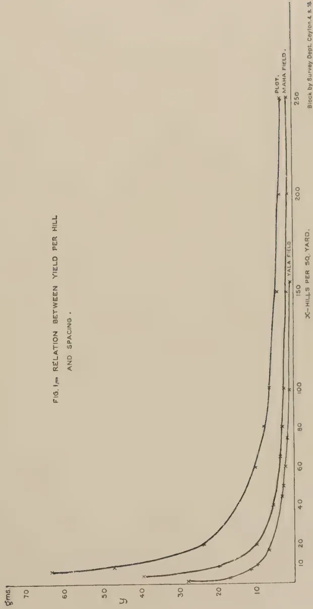
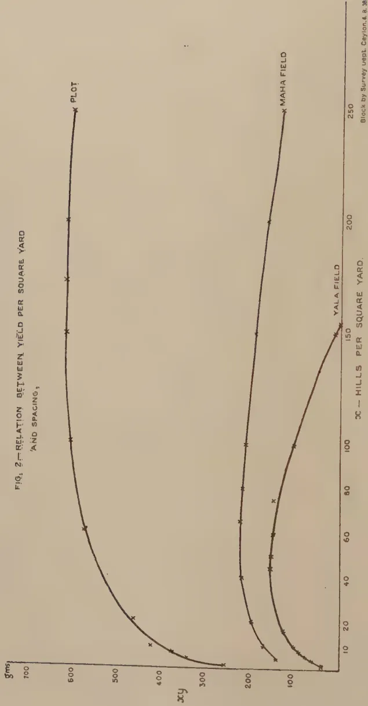
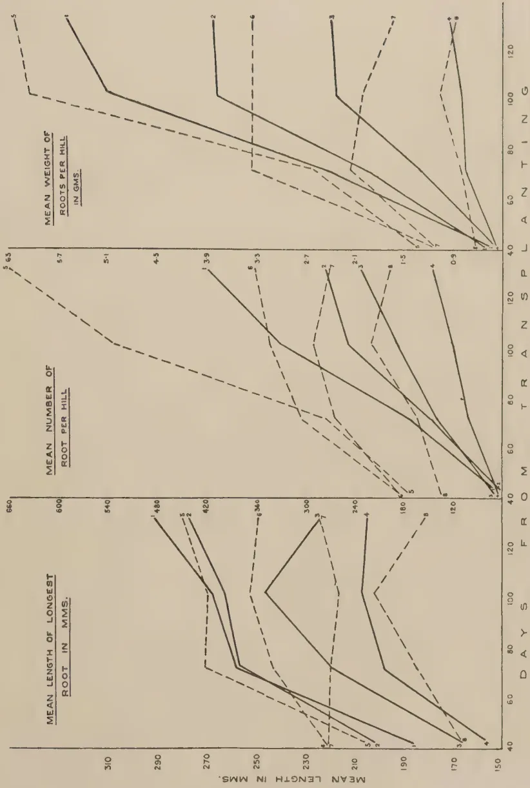
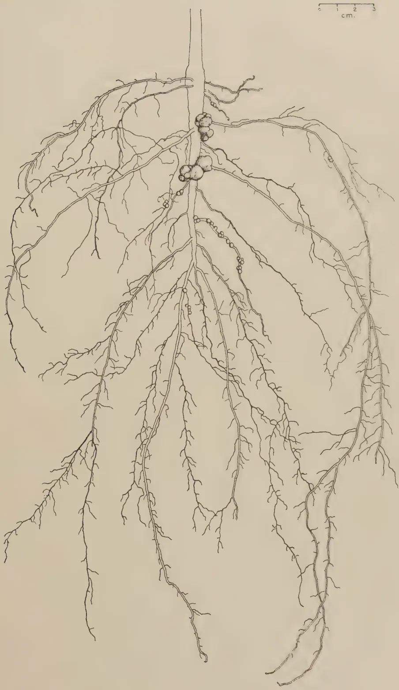
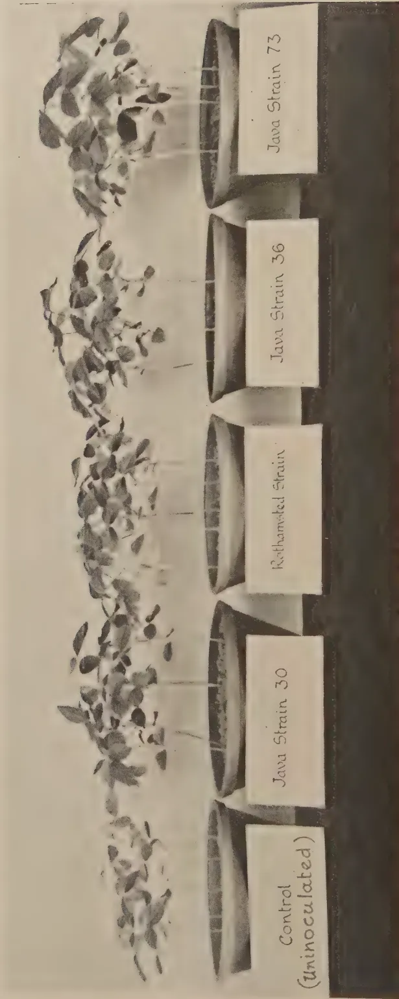
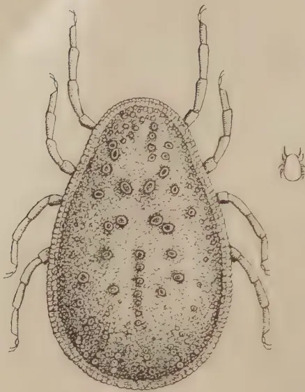
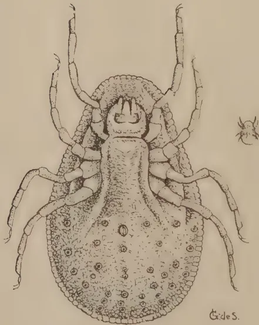

The
August, 1938
IN an interesting article which appears in the last issue of The Tropical Agriculturist under the title "Agriculture and Irrigation" Mr. R. I. Batalin refers to the dual aspect of Ceylon's agricultural problem determined by the presence of two distinct climatic zones. In the rich wet area which has the benefit of both the monsoons there is little scope for expansion of what is commonly called village agriculture. The rainfall is too heavy, and too irregular with regard to the monthly distribution, to enable the cultivation of annual crops with the exception of paddy and a few perishable vegetables of inferior quality. There are no lands available in these districts for growing paddy, and the small effective demand sets a very definite limit to the growth of perishable vegetables. Nor is this area suitable for fruit which generally requires a long resting period. The wet zone is most decidedly the area of plantation crops, and, in spite of the prolonged sag in commodity prices, a man who owns land and wishes to put some money into it will plant tea, rubber, or coconuts if he has the freedom to choose.
So far as annual crops and fruit are concerned agricultural development must take place in the dry zone. The main factor conditioning agriculture in the dry zone in modern times has been what Mr. Batalin calls the basin system of irrigation—the determination of the size of the village community and of its activities by the exiguous supply of water in a small tank. The village hugs the tank, and the only use which the inhabitants can make of the unoccupied land around them is to extract a precarious chena crop during the short rainy season. There is very little hope of agricultural expansion in these conditions.
Mr. Batalin seeks a way out of this slough. He discusses the possibility of creating large reservoirs of water, each commanding several hundreds of thousands of acres of land, in which not only paddy but any crop which gives the best return in terms of money can be grown. He does not see any special virtue in paddy so long as compensating crops are grown.
70He quotes the case of the Nile valley where the main crop was cereals in the days of basin irrigation ; but under perennial irrigation provided by the barrages cotton has taken the place of wheat and rice and the people in their new found prosperity actually import grain. He envisages not the banishment of paddy from the agricultural economy of the dry zone but its being woven into a larger and more elaborate agricultural pattern in which paddy will take its place in a rotation with other commodities such as cotton, tobacco, hemp, and sugar. We believe that Government has these large schemes of reservoir irrigation under investigation, and the Department of Agriculture proposes to send one of its officers to Australia to study the operations of the large farm. But the general community must bear in mind that when the technical departments are ready to advise and assist in the creation of the larger farms, and Government employs the new Agricultural Products (Regulation) Ordinance to stimulate local agriculture, capital and enterprise must be available to explore the resources of the dry zone. The small peasant, always preoccupied in the search for the next day's food for the family, cannot develop these resources without the aid of capital.
That is the future of the dry zone as barely outlined by Mr. Batalin. Till then the Department of Agriculture must adopt less spectacular methods to make small additions to the income—agricultural income is his only income—of the peasant of the Wanni.
71STUDIES ON PADDY CULTIVATION—VIIITHE EFFECT OF SPACING AND METHOD OFJ. C. HAIGH, Ph.D.,
BOTANIST
The "village" method of transplanting paddy in Ceylon is to put in bunches of three or four seedlings, about four inches apart; observations made by Mr. K. D. S. S. Nanayakkara, Assistant in Economic Botany, on an experimental area at Peradeniya suggested that, at any rate where soil conditions were good, a better yield might be obtained if the plants were given more room in which to develop. Accordingly an experiment was planned, in which four spacings were compared; they were eighteen, twelve, and eight inches each way, with the normal four by four inches as control. At the same time, the effect was compared of putting a single seedling or three seedlings to a hill. The advantage of putting three seedlings is to create a feeling of confidence that at least one will reach maturity, and from the last paper of this series (10) it would appear that such confidence is well founded; on the other hand, the seed rate is increased, and it is not established that the loss of plants in the seedling stage as a result of single planting, will justify the extra seed required for triple planting. It is also possible that the spacing may determine whether one or three seedlings per hill are better.
Optimum spacing is likely to vary with fertility, and the trials were run in three series, on what were considered to be good, average and poor fields. There were thus twenty-four treatments for comparison, as set out below.
Four spacings (18 in., 12 in., 8 in., and 4 in.) combined with
Two methods of sowing (single seedlings and three
seedlings per hill) combined with
Three soil types (rich, medium and poor).
The trials were further planned to make observations from two points of view—one, that of the development of the individual plant, and two, the effect of spacing on yield per acre. Accordingly, the above twenty-four treatments were sown in duplicate; one set in which each plot had the same number of plants, and in which it was intended to collect data from individual plants (to be called henceforward the plot trials), and another set in which all plots were of the same size, in which plot yields only were to be recorded (to be known as the field trials). In the plot trials, each treatment was to be replicated ten times, and in the field trials six times, and the plots were to be randomized.
The complete trial, of 384 plots, was sown for the maha 1935-36 season. The field trials were destroyed by a circumstance completely unconnected with the experiment (or even with agriculture) and the plot trials alone were harvested. The field trials were repeated during the next (yala 1936) season, and again during the maha 1936-37 season, since different varieties of paddy are sown during the two seasons, and comparison between them is not always reliable. It was not possible to repeat the plot trials, so that comparison between plot and field results is weakened by their being obtained in different seasons; on the other hand, both series of field trials were carried out on the same land that had been used previously for the plot trials, an advantage which may more than compensate for seasonal effect under tropical conditions.
There was one difference of treatment between plot trials and field trials; in the former, grown under experimental conditions, every effort was made to protect plants from being bitten off and destroyed by the land crab (Paratelphusa Oziotelphusa hydrodromus) which is the principal enemy of the paddy seedling in Ceylon. In the field trials, grown under agricultural conditions, no special precautions were taken; but counts were made of the gaps in the plots which may serve to indicate the relative importance of crab attack to the young seedling.
The field trials were carried out in plots of 1/200 acre, with borders, randomized and replicated six times. Seed was sown in nurseries and transplanted; at harvest, records were made for each plot, of weight of grain, weight of straw, weight of empty grain and the percentage of plants to reach maturity.
73In the yala 1936 trial, the variety used was Vellai-illankalayan 28061. It was sown in nurseries on March 21, 1936, transplanted on April 21-24 and harvested on September 1-10. Transplanting was done by fields, the poor field being planted first, and the rich field last. Harvesting was done by treatments, each being harvested as it became ripe.
The maha 1936-37 trial was sown with Mawi B-11, which was put in nurseries on August 24, 1936, transplanted on October 7-13 and harvested between March 10-20, 1937. In both trials, the closely spaced plots (whether threes or singles) were harvested first, followed progressively by the more widely-spaced treatments (Table I.); the effect of wider spacing has been to delay maturity, and the type of soil appears to have had no effect.
TABLE IEffect of spacing on ageMeasured by Days from sowing to harvest.
Yala 1936.| Spacing | Days | Spacing | Days |
|---|---|---|---|
| Single seedlings at 18 in. .. | 173 | Three seedlings at 18 in. .. | 173 |
| „ 12 „ .. | 173 | „ 12 „ .. | 173 |
| „ 8 „ .. | 170 | „ 8 „ .. | 170 |
| „ 4 „ .. | 164 | „ 4 „ .. | 164 |
| Spacing | Days | Spacing | Days |
|---|---|---|---|
| Single seedlings at 18 in. .. | 209 | Three seedlings at 18 in. .. | 209 |
| „ 12 „ .. | 204 | „ 12 „ .. | 204 |
| „ 8 „ .. | 202 | „ 8 „ .. | 202 |
| „ 4 „ .. | 199 | „ 4 „ .. | 199 |
The yala grain results are given in Table II. and the analysis of variance in Table III. The trial is treated as a complex experiment, so that the effect of soil type may be measured.
74
TABLE II
Field Trials—Yala 1936
Yield of Grain in lb.
| Singles | Threes | Totals | |||||||||||||
|---|---|---|---|---|---|---|---|---|---|---|---|---|---|---|---|
| I | II | III | IV | V | VI | I | II | III | VI | V | VI | S | T | S+T | |
| Poor Soil Blocks | |||||||||||||||
| 18 in. | 1.62.. | 1.19.. | 2.75.. | 3.88.. | 3.87.. | 4.13.. | 1.62.. | 1.50.. | 4.25.. | 7.13.. | 9.12.. | 7.63.. | 17.44.. | 31.25.. | 48.69 |
| 12 " | 2.87.. | 2.50.. | 4.19.. | 11.00.. | 4.31.. | 4.75.. | 5.00.. | 3.81.. | 8.00.. | 10.50.. | 7.75.. | 6.50.. | 29.62.. | 41.56.. | 71.18 |
| 8 " | 3.75.. | 4.25.. | 4.38.. | 7.75.. | 8.62.. | 7.38.. | 6.81.. | 5.62.. | 6.19.. | 8.88.. | 7.81.. | 7.81.. | 36.13.. | 43.12.. | 79.25 |
| 4 " | 7.25.. | 6.37.. | 7.25.. | 10.56.. | 9.25.. | 8.88.. | 7.62.. | 8.13.. | 6.25.. | 9.25.. | 8.87.. | 9.13.. | 49.50.. | 49.25.. | 98.75 |
| Total | 15.49 | 14.31 | 18.57 | 33.13 | 26.05 | 25.14 | 21.05 | 19.06 | 24.69 | 35.76 | 33.55 | 31.07 | 132.69 | 165.18 | 297.87 |
| Block Total | 36.54 | 33.37 | 43.26 | 68.89 | 59.60 | 56.21 | |||||||||
| Medium Soil | |||||||||||||||
| 18 in. | 6.25.. | 6.62.. | 5.13.. | 4.63.. | 2.06.. | 2.56.. | 7.63.. | 7.75.. | 6.75.. | 7.25.. | 4.87.. | 5.13.. | 27.25.. | 39.38.. | 66.63 |
| 12 " | 7.88.. | 6.00.. | 9.06.. | 9.75.. | 4.50.. | 6.25.. | 8.62.. | 8.38.. | 12.25.. | 10.00.. | 9.12.. | 7.63.. | 43.44.. | 56.00.. | 99.44 |
| 8 " | 9.50.. | 8.37.. | 6.75.. | 10.63.. | 5.87.. | 8.50.. | 7.37.. | 7.41.. | 6.88.. | 11.50.. | 7.25.. | 11.12.. | 49.62.. | 51.53.. | 101.15 |
| 4 " | 6.88.. | 9.00.. | 7.00.. | 10.75.. | 9.00.. | 5.12.. | 8.25.. | 8.75.. | 12.00.. | 11.88.. | 7.75.. | 11.00.. | 47.75.. | 59.63.. | 107.38 |
| Total | 30.51 | 29.99 | 27.94 | 35.76 | 21.43 | 22.43 | 31.87 | 32.29 | 37.88 | 40.63 | 28.99 | 34.88 | 168.06 | 206.54 | 374.60 |
| Block Total | 62.38 | 62.28 | 65.82 | 76.39 | 50.42 | 57.31 | |||||||||
| Rich Soil | |||||||||||||||
| 18 in. | 7.75.. | 8.62.. | 3.38.. | 4.81.. | 6.87.. | 7.88.. | 11.00.. | 12.75.. | 4.37.. | 5.75.. | 11.13.. | 10.37.. | 39.31.. | 55.37.. | 94.68 |
| 12 " | 15.62.. | 13.25.. | 7.50.. | 9.50.. | 9.13.. | 9.37.. | 14.38.. | 14.00.. | 9.37.. | 9.69.. | 8.38.. | 8.25.. | 64.37.. | 64.07.. | 128.44 |
| 8 " | 13.63.. | 13.00.. | 7.25.. | 9.12.. | 9.25.. | 9.69.. | 12.87.. | 12.25.. | 8.63.. | 8.12.. | 8.88.. | 9.25.. | 61.94.. | 60.00.. | 121.94 |
| 4 " | 14.00.. | 14.00.. | 9.25.. | 9.13.. | 10.12.. | 7.13.. | 12.87.. | 14.63.. | 9.37.. | 9.50.. | 8.50.. | 7.50.. | 63.63.. | 62.37.. | 126.00 |
| Total | 51.00 | 48.87 | 27.38 | 32.56 | 35.37 | 34.07 | 51.12 | 53.63 | 31.74 | 33.06 | 36.89 | 35.37 | 229.25 | 241.81 | 471.06 |
| Block Total | 102.12 | 102.50 | 59.12 | 65.62 | 72.26 | 69.44 | 1,143.53 | ||||||||
| Grand Total | |||||||||||||||
TABLE III
Field Trials—Yala 1936
Analysis of Variance for Grain data
| Degrees of Freedom | Sum of Squares | Mean Square | Standard Deviation | loge S. D. | Z | Level of Significance | |
|---|---|---|---|---|---|---|---|
| Blocks | .. | .. | .. | .. | .. | .. | .. |
| Methods | 15 | 395.4017 | 26.3601 | 5.134 | 1.6359 | 1.2775 | 1 per cent. |
| Spacings | 1 | 48.4532 | 48.4532 | 6.961 | 1.9403 | 1.5819 | 1 " |
| Spacings × Methods | 3 | 231.7078 | 77.2359 | 8.788 | 2.1734 | 1.8150 | 1 " |
| Fields | 3 | 21.1473 | 7.0491 | 2.655 | 0.9765 | 0.6181 | — |
| Fields | 2 | 313.7972 | 156.8986 | 12.526 | 2.5277 | 2.1693 | 1 per cent. |
| Treatments × Fields | 14 | 42.3188 | 3.0228 | 1.739 | 0.5532 | 0.1948 | — |
| Error | 105 | 214.9203 | 2.0469 | 1.431 | 0.3584 | .. | .. |
| Total | 143 | 1267.7463 |
Standard deviation of a single plot is 1.431 lb.
Significant differences between groups of plots are : for 6 plots, 14.8 lb. ; for 12 plots, 21 lb. ; for 18 plots, 25.8 lb. ; for 24 plots, 29.6 lb. ; for 36 plots, 36.9 lb. ; for 48 plots, 42 lb. ; and for 72 plots, 51.6 lb.
76From the analysis of variance we may draw the following conclusions :—
1. There is a significant difference between the fertility of the three soil types, as measured by yield of grain obtained on them. The field totals are : Rich 471.06 lb., Medium 374.60 lb., and Poor 297.87 lb. Differences of 42 lb. are significant, so that rich is better than medium and medium than poor. At the same time, the absence of a significant interaction between fields and treatments and the fact that the order of yield is the same for all three soil types, suggest that neither treatment is affected by the differences in fertility, and that corresponding field totals may be grouped for purposes of further comparison.
2. There are significant differences between yields at the different spacings. The totals for all soil types are—
| 18" | .. | .. | .. | 210.00 |
| 12" | .. | .. | .. | 299.06 |
| 8" | .. | .. | .. | 302.34 |
| 4" | .. | .. | .. | 332.13 |
and differences of 36.4 lb. are significant ; spacing at 18 in. is therefore inferior to all other spacings, which do not differ among themselves, although there is a suggestion that the 4 in. spacing is superior to the 12 in. spacing.
3. There is a significant difference between methods of planting. Grouping for soil types, the totals are—
| Single seedlings | .. | .. | 530.00 lb. |
| Three seedlings | .. | .. | 613.53 ,, |
The significant difference is 51.6 lb. so that planting three seedlings to a hill has given a significantly higher yield than planting single seedlings only, irrespective of soil type and of spacing. If, however, we examine the results in more detail, we shall find that the superiority of the three seedlings per hill varies with the spacing ; it is there for all spacings, but its value is only significant at 18 in. Thus, although the yields at the different spacings are not affected by the method of planting, the reverse is not the case, and it is only at the widest spacing that three seedlings per hill appear to be justifiable. The interaction between spacings and methods just fails to be significant, which will account for the inconsistency of the results quoted above.
77
TABLE IV
Field Trials—Maha 1936-37
Yield of Grain in lb.
| Singles | Threes | Totals | |||||||||||||
|---|---|---|---|---|---|---|---|---|---|---|---|---|---|---|---|
| I | II | III | IV | V | VI | I | II | III | IV | V | VI | S | T | S+T | |
| Poor Soil Blocks | |||||||||||||||
| 18 in. | 4.25.. | 4.87.. | 4.38.. | 2.87.. | 3.38.. | 2.62.. | 10.00.. | 5.75.. | 11.00.. | 5.56.. | 5.44.. | 6.75.. | 22.37.. | 44.50.. | 66.87 |
| 12 " | 6.50.. | 9.19.. | 9.12.. | 6.13.. | 5.37.. | 7.19.. | 9.56.. | 7.75.. | 10.50.. | 10.75.. | 9.00.. | 7.75.. | 43.50.. | 55.31.. | 98.81 |
| 8 " | 8.88.. | 7.87.. | 7.25.. | 8.38.. | 8.50.. | 10.12.. | 9.75.. | 9.38.. | 9.87.. | 9.88.. | 11.50.. | 11.62.. | 51.00.. | 62.00.. | 113.00 |
| 4 " | 11.25.. | 14.25.. | 11.00.. | 11.75.. | 12.62.. | 17.50.. | 12.50.. | 8.50.. | 11.13.. | 12.50.. | 13.00.. | 14.87.. | 78.37.. | 72.50.. | 150.87 |
| Total | 30.88.. | 36.18.. | 31.75.. | 29.13.. | 29.87.. | 37.43.. | 41.81.. | 31.38.. | 42.50.. | 38.69.. | 38.94.. | 40.99.. | 195.24.. | 234.31.. | 429.55 |
| Block Total | 72.69 | 67.56 | 74.25 | 67.82 | 68.81 | 78.42 | |||||||||
| Medium Soil | |||||||||||||||
| 18 in. | 7.13.. | 4.81.. | 7.88.. | 5.75.. | 5.25.. | 5.62.. | 5.87.. | 10.87.. | 9.19.. | 13.25.. | 3.25.. | 7.19.. | 36.44.. | 49.62.. | 86.06 |
| 12 " | 7.56.. | 10.75.. | 9.88.. | 6.87.. | 4.88.. | 9.37.. | 11.25.. | 11.62.. | 13.19.. | 11.19.. | 9.13.. | 6.87.. | 49.31.. | 63.25.. | 112.56 |
| 8 " | 9.13.. | 9.50.. | 11.63.. | 8.12.. | 8.75.. | 8.31.. | 10.75.. | 11.37.. | 14.00.. | 13.50.. | 6.44.. | 11.25.. | 55.44.. | 67.31.. | 122.75 |
| 4 " | 12.63.. | 13.81.. | 13.56.. | 14.00.. | 11.87.. | 8.19.. | 12.12.. | 12.25.. | 13.50.. | 7.25.. | 9.63.. | 9.12.. | 74.06.. | 63.87.. | 137.93 |
| Total | 36.45 | 38.87 | 42.95 | 34.74 | 30.75 | 31.49 | 39.99 | 46.11 | 49.88 | 45.19 | 28.45 | 34.43 | 215.25 | 244.05 | 459.30 |
| Block Total | 76.44 | 84.98 | 92.83 | 79.93 | 59.20 | 65.92 | |||||||||
| Rich Soil | |||||||||||||||
| 18 in. | 7.31.. | 7.12.. | 4.63.. | 5.25.. | 3.75.. | 3.88.. | 16.12.. | 10.38.. | 8.69.. | 4.87.. | 8.63.. | 11.87.. | 31.94.. | 60.56.. | 92.50 |
| 12 " | 12.25.. | 9.75.. | 7.75.. | 7.50.. | 9.25.. | 4.87.. | 12.37.. | 12.50.. | 12.50.. | 9.75.. | 11.25.. | 7.13.. | 51.37.. | 65.50.. | 116.87 |
| 8 " | 10.37.. | 12.63.. | 11.37.. | 8.13.. | 9.62.. | 7.38.. | 13.00.. | 15.37.. | 13.75.. | 10.63.. | 12.87.. | 10.88.. | 59.50.. | 76.50.. | 136.00 |
| 4 " | 15.50.. | 14.50.. | 13.62.. | 14.88.. | 15.37.. | 12.75.. | 14.00.. | 16.75.. | 14.25.. | 13.50.. | 14.37.. | 13.63.. | 86.62.. | 86.50.. | 173.12 |
| Total | 45.43 | 44.00 | 37.37 | 35.76 | 37.99 | 28.88 | 55.49 | 55.00 | 49.19 | 38.75 | 47.12 | 43.51 | 229.43 | 289.06 | 518.49 |
| Block Total | 100.92 | 99.00 | 86.56 | 74.51 | 85.11 | 72.39 | Grand Total | 1,407.34 | |||||||
78
TABLE V
Field Trials—Maha 1936-37
Analysis of Variance for Grain data
| Degrees of Freedom | Sum of Squares | Mean Square | Standard Deviation | logo S. D. | Z | Level of Significance | |
|---|---|---|---|---|---|---|---|
| Blocks | .. 15 | .. 195.4509 | .. 13.0301 | .. 3.6097 | .. 1.2837 | .. 0.7096 | .. 1 per cent. |
| Treatments— | |||||||
| Methods | .. 1 | .. 112.8906 | .. 112.8906 | .. 10.6249 | .. 2.3633 | .. 1.7892 | .. 1 " |
| Spacings | .. 3 | .. 677.6129 | .. 225.8709 | .. 15.0290 | .. 2.7100 | .. 2.1359 | .. 1 " |
| Methods X Spacings | .. 3 | .. 96.2446 | .. 32.0815 | .. 5.6641 | .. 1.7338 | .. 1.1597 | .. 1 " |
| Fields | .. 2 | .. 85.4086 | .. 42.7043 | .. 6.5349 | .. 1.8772 | .. 1.3031 | .. 1 " |
| Treatments X Fields | .. 14 | .. 50.3600 | .. 3.5971 | .. 1.8966 | .. 0.6402 | .. 0.0661 | .. — |
| Error | .. 105 | .. 323.5101 | .. 3.0811 | .. 1.7553 | .. 0.5741 | .. | .. |
| Total | .. 143 | .. 1541.4777 |
Standard deviation of a single plot is 1.7553 lb.
Significant differences between groups of plots are : for 6 plots, 18.2 lb.; for 12 plots, 27 lb.; for 18 plots, 31.6 lb.; for 24 plots, 36.5 lb.; for 36 plots, 44.7 lb.; for 48 plots, 54 lb.; and for 72 plots, 63.2 lb.
79The maha grain results are given in Table IV. and the analysis of variance in Table V., from which we draw the following conclusions :—
1. As in the yala results, there is a significant difference between the yields of the three soil types. Further examination reveals, however, that the difference is only partial ; the yield totals are: Poor 429.55 lb., Medium 459.30 lb. and Rich 518.49 lb., and significant differences are not less than 51.6 lb. so that the rich soil has given a significantly better yield than either of the others, which do not differ significantly among themselves. As before, there is no significant interaction between fields and treatments, so that results may again be grouped.
2. There are significant differences between the yields of the spacing treatments. The grand totals are :—
| 18" | .. | .. | 245.43 lb. |
| 12" | .. | .. | 328.24 ,, |
| 8" | .. | .. | 371.75 ,, |
| 4" | .. | .. | 461.92 ,, |
and significant differences are not less than 44.7 lb. Thus, 18 in. is again inferior to all other spacings, but in addition, the 4 in. spacing has beaten all others. The significance of these differences is unaffected if the field totals are analysed separately.
3. There is a significant difference between methods of planting. The grand totals are single seedlings 639.92 lb., three seedlings 767.42 lb. and the level of significance is 63 lb. so that three seedlings per hill have given a significantly higher yield than single seedlings.
4. There is a significant interaction between methods and spacings, and these results must be examined in more detail. At 18 in., 12 in., and 8 in., three seedlings give a significantly higher yield than single seedlings, but at 4 in. the single planting has given the higher yield, though the difference is not significant. The figures are given below, for comparison with the level of significance of 31.6 lb.
| Spacing | Difference threes—singles | ||
|---|---|---|---|
| 18" | .. | .. | + 63.93 lb. |
| 12" | .. | .. | + 39.88 ,, |
| 8" | .. | .. | + 39.87 ,, |
| 4" | .. | .. | — 16.18 ,, |
The marked superiority of the multiple planting at 18 in. is worthy of notice.
If we examine the effect of method of planting on spacing, we find that where single seedlings were planted, the general result is repeated, i.e., 4 in. is superior to all others, and 18 in. is inferior to all others. Where three seedlings per hill are planted, however, the 4 in. spacing loses its superiority over the
808 in., and the 12 in. just fails to beat the 18 in. These results indicate a general tendency—that where the spacing is as close as 4 in., three seedlings per hill are not necessary, but as the spacing distance increases, they become desirable or even essential, but even then they fail to compensate for the smaller number of hills to the acre.
If we take into consideration that these trials were carried out in different seasons and with different varieties, the results are remarkably consistent. They indicate that a spacing of 18 in. each way is too wide, even when compensated by the planting of three seedlings per hill; that yields increase progressively as the spacing is decreased, and that 4 in. each way is the best spacing tried, though not necessarily the optimum spacing for either variety grown; that at a spacing of 4 in., three seedlings per hill offer little or no advantage over single seedlings. These results were not materially affected by the type of soil in which the plants were growing, although the types used gave significantly-different yields; at the same time, there is a definite tendency for the superiority of the closer spacings to be more pronounced on the poorer soils.
TABLE VI
Yields of empty grains as percentages by weight of plot yields
| Yala 1936 | Maha 1936-37 | ||||||
|---|---|---|---|---|---|---|---|
| Poor Soil | Medium Soil | Rich Soil | Poor Soil | Medium Soil | Rich Soil | ||
| Single seedlings at 18 in. | .. | 6.1 | 8.4 | 7.2 | 5.0 | 6.0 | 7.4 |
| 12 ,, | 3.8 | 7.7 | 6.4 | 4.7 | 6.4 | 5.7 | |
| 8 ,, | 6.9 | 5.7 | 6.1 | 5.4 | 5.8 | 6.6 | |
| 4 ,, | 6.1 | 6.3 | 7.5 | 4.5 | 4.6 | 6.5 | |
| Three seedlings at 18 in. | .. | 4.8 | 6.9 | 7.9 | 5.5 | 7.2 | 5.9 |
| 12 ,, | 5.7 | 7.2 | 8.1 | 4.8 | 5.4 | 5.0 | |
| 8 ,, | 6.5 | 7.7 | 10.1 | 4.8 | 5.3 | 5.0 | |
| 4 ,, | 6.9 | 6.6 | 10.8 | 5.0 | 6.0 | 7.3 | |
S. D. = 2.15 per cent.
S. D. = 1.29 per cent.
The records of empty grains are given in Table VI. They are expressed as percentages of the plot yields and are reasonably uniform. In the maha figures there is a tendency for the amount of empty grains to decrease as the spacing decreases, but the movement is not regular, and if the figures are considered as a population, no two of them are significantly different. The yala figures are more irregular, but there is no indication of a trend of movement in any direction. Considered as a population, two of them (3.8 and 10.8) are significantly different, but the difference has no practical application. There has not been, in these trials, that disproportionate waste of crop in immature tillers that has sometimes been stated to be the result of wide planting.
81TABLE VII
Field Trials—Yala 1936
Yield of Straw in lb.
| Singles | Threes | Totals | |||||||||||||
|---|---|---|---|---|---|---|---|---|---|---|---|---|---|---|---|
| I | II | III | IV | V | VI | I | II | III | IV | V | VI | S | T | S+T | |
| Poor Soil | |||||||||||||||
| 18 in. | 2 | 2 | 8 | 6 | 10 | 6 | 3 | 3 | 7 | 10 | 15 | 12 | 34 | 50 | 84 |
| 12 " | 9 | 5 | 7 | 11 | 8 | 8 | 8 | 5 | 11 | 15 | 15 | 12 | 48 | 66 | 114 |
| 8 " | 4 | 5 | 7 | 11 | 15 | 11 | 5 | 10 | 7 | 10 | 11 | 10 | 53 | 53 | 106 |
| 4 " | 8 | 8 | 9 | 12 | 10 | 10 | 10 | 12 | 10 | 15 | 12 | 10 | 57 | 69 | 126 |
| Total | 23 | 20 | 31 | 40 | 43 | 35 | 26 | 30 | 35 | 50 | 53 | 44 | 192 | 238 | 430 |
| Block Total | 49 | 50 | 66 | 90 | 96 | 79 | |||||||||
| Medium Soil | |||||||||||||||
| 18 in. | 12 | 14 | 13 | 13 | 3 | 7 | 15 | 18 | 11 | 15 | 8 | 9 | 62 | 76 | 138 |
| 12 " | 14 | 15 | 19 | 25 | 8 | 16 | 15 | 17 | 23 | 16 | 16 | 12 | 97 | 99 | 196 |
| 8 " | 13 | 13 | 10 | 14 | 7 | 10 | 10 | 12 | 13 | 16 | 9 | 14 | 67 | 74 | 141 |
| 4 " | 10 | 13 | 14 | 14 | 11 | 16 | 15 | 15 | 16 | 18 | 10 | 12 | 78 | 86 | 164 |
| Total | 49 | 55 | 56 | 66 | 29 | 49 | 55 | 62 | 63 | 65 | 43 | 47 | 304 | 335 | 639 |
| Block Total | 104 | 117 | 119 | 131 | 72 | 96 | |||||||||
| Rich Soil | |||||||||||||||
| 18 in. | 10 | 14 | 8 | 9 | 12 | 20 | 21 | 22 | 10 | 8 | 20 | 20 | 73 | 101 | 174 |
| 12 " | 26 | 16 | 12 | 16 | 15 | 12 | 26 | 25 | 18 | 20 | 14 | 12 | 97 | 115 | 212 |
| 8 " | 18 | 16 | 12 | 6 | 10 | 11 | 20 | 20 | 11 | 12 | 10 | 11 | 73 | 84 | 157 |
| 4 " | 18 | 15 | 16 | 9 | 14 | 9 | 22 | 22 | 15 | 15 | 12 | 12 | 81 | 98 | 179 |
| Total | 72 | 61 | 48 | 40 | 51 | 52 | 89 | 89 | 54 | 55 | 56 | 55 | 324 | 398 | 722 |
| Block Total | 161 | 150 | 102 | 95 | 107 | 107 | Grand Total | 1,791 | |||||||
[Faint page: no legible print of its own could be verified; text withheld (stage 4 review list)]
83The yala straw weights are given in Table VII. and the analysis of variance in Table VIII. The following conclusions are drawn from the data.
1. The results are identical with the corresponding figures for grain, with the exception of the order of merit at different spacings. If the yields are summarized, we have the following result.
| 18" | .. | .. | 396 lb. |
| 12" | .. | .. | 522 ,, |
| 8" | .. | .. | 404 ,, |
| 4" | .. | .. | 469 ,, |
The level of significance of differences for groups of 36 plots is 74.5 lb., and from the data, the 12 in. spacing has given a higher straw yield than either the 8 in. or the 18 in. Further analysis shows that the superiority of the 12 in. spacing is confined to the medium and rich soils, and that in the poor series, the 4 in. spacing gives the highest straw yield, with the 12 in. spacing second. A comparison of spacing and methods of planting shows that the 12 in. spacing leads whether one or three seedlings are planted; otherwise, the 18 in. spacing has the poorest straw yield for single seedlings but the 8 in. spacing is poorest where three seedlings per hill were planted. These results bear no relation to the corresponding grain weights.
2. On the total yields, three seedlings per hill are superior to a single seedling. The totals are 971 lb. and 820 lb. respectively and the level of significance is 105 lb. A detailed examination shows that this significant superiority is built up from a series, of which no member is itself significant. In each group of twelve plots, the six planted with three seedlings per hill have given a bigger yield than the six planted with single seedlings, but the differences are nowhere significant, and the superiority decreases as the spacing becomes less. If we compare methods of planting with spacing, we find that only at 18 in. have the three seedlings given a significantly higher yield than the single seedling. Nevertheless, the analysis of variance indicates that there is no interaction between spacing and methods.
The maha straw results are given in Table IX. and the analysis of variance in Table X. There are significant differences between fields, between spacings and between methods. The spacing totals are 18 in., 387.50 lb.; 12 in., 473.50 lb. 8 in., 493.25 lb.; and 4 in., 547.75 lb. The order of merit agrees with that for the grain weights, but the differences do not have the same significance. The 18 in. spacing is again inferior to all others, but the 4 in. spacing has not yielded a significantly greater amount of straw than the 8 in. spacing. The general agreement is, however, the same.
84
TABLE IX
Field Trials—Maha 1936-37
Yield of Straw in lb.
| Singles | Threes | Totals | |||||||||||||
|---|---|---|---|---|---|---|---|---|---|---|---|---|---|---|---|
| I | II | III | IV | V | VI | I | II | III | IV | V | VI | S | T | S+T | |
| Poor Soil Blocks | |||||||||||||||
| 18 in. | 6.50.. | 7.25.. | 8.50.. | 4.00.. | 4.00.. | 3.50.. | 11.25.. | 9.50.. | 15.50.. | 9.00.. | 6.50.. | 9.50.. | 33.75.. | 61.25.. | 95.00 |
| 12 " | 9.00.. | 12.50.. | 11.75.. | 7.50.. | 7.00.. | 8.25.. | 10.50.. | 9.00.. | 11.00.. | 13.75.. | 11.75.. | 13.00.. | 56.00.. | 69.00.. | 125.00 |
| 8 " | 10.50.. | 11.00.. | 8.00.. | 9.50.. | 9.50.. | 15.75.. | 10.00.. | 11.50.. | 9.50.. | 11.75.. | 14.00.. | 14.00.. | 64.25.. | 70.75.. | 135.00 |
| 4 " | 11.25.. | 15.25.. | 9.25.. | 10.00.. | 15.00.. | 14.50.. | 14.00.. | 10.25.. | 19.00.. | 14.50.. | 14.75.. | 19.00.. | 75.25.. | 91.50.. | 166.75 |
| Total | 37.25 | 46.00 | 37.50 | 31.00 | 35.50 | 42.00 | 45.75 | 40.25 | 55.00 | 49.00 | 47.00 | 55.50 | 229.25 | 292.50 | 521.75 |
| Block Total | 83.00 | 86.25 | 92.50 | 80.00 | 82.50 | 97.50 | |||||||||
| Medium Soil | |||||||||||||||
| 18 in. | 12.50.. | 10.25.. | 12.00.. | 10.50.. | 13.00.. | 12.25.. | 12.00.. | 20.00.. | 14.25.. | 16.00.. | 12.00.. | 13.50.. | 70.50.. | 87.75.. | 158.25 |
| 12 " | 11.25.. | 16.50.. | 15.00.. | 10.00.. | 13.00.. | 14.00.. | 16.00.. | 15.75.. | 21.00.. | 17.00.. | 13.50.. | 12.50.. | 79.75.. | 95.75.. | 175.50 |
| 8 " | 10.50.. | 12.50.. | 16.50.. | 13.50.. | 12.50.. | 15.00.. | 12.00.. | 16.50.. | 23.50.. | 14.25.. | 16.50.. | 16.00.. | 80.50.. | 98.75.. | 179.25 |
| 4 " | 12.75.. | 15.00.. | 17.00.. | 15.00.. | 15.50.. | 13.50.. | 15.50.. | 16.25.. | 12.75.. | 11.00.. | 12.50.. | 13.00.. | 88.75.. | 81.00.. | 169.75 |
| Total | 47.00 | 54.25 | 60.50 | 49.00 | 54.00 | 54.75 | 55.50 | 68.50 | 75.50 | 58.25 | 54.50 | 55.00 | 319.50 | 363.25 | 682.75 |
| Block Total | 110.250 | 122.75 | 132.00 | 107.25 | 108.50 | 109.75 | |||||||||
| Rich Soil | |||||||||||||||
| 18 in. | 14.00.. | 14.25.. | 6.00.. | 7.50.. | 6.50.. | 7.00.. | 21.25.. | 16.50.. | 10.00.. | 7.25.. | 9.00.. | 15.00.. | 55.25.. | 79.00.. | 134.25 |
| 12 " | 16.50.. | 13.00.. | 9.50.. | 12.00.. | 13.50.. | 12.00.. | 15.00.. | 20.50.. | 14.50.. | 18.00.. | 14.50.. | 14.00.. | 76.50.. | 96.50.. | 173.00 |
| 8 " | 16.50.. | 16.25.. | 14.50.. | 9.50.. | 11.50.. | 10.50.. | 18.00.. | 21.00.. | 18.00.. | 11.00.. | 18.75.. | 13.50.. | 78.75.. | 100.25.. | 179.00 |
| 4 " | 18.00.. | 19.00.. | 16.00.. | 14.50.. | 16.75.. | 15.00.. | 21.50.. | 19.00.. | 15.50.. | 18.00.. | 20.00.. | 18.00.. | 99.25.. | 112.00.. | 211.25 |
| Total | 65.00 | 62.50 | 46.00 | 43.50 | 48.25 | 44.50 | 75.75 | 77.00 | 58.00 | 54.25 | 62.25 | 60.50 | 309.75 | 387.75 | 697.50 |
| Block Total | 140.75 | 139.50 | 104.00 | 97.75 | 110.50 | 105.00 | |||||||||
| Grand Total | 1902.00 | ||||||||||||||
TABLE X
Field Trials—Maha 1936-37
Analysis of Variance for Straw data
| Degrees of Freedom | Sum of Squares | Mean Square | Standard Deviation | loge S. D. | Z | Level of Significance | |
|---|---|---|---|---|---|---|---|
| Blocks | .. | .. | .. | .. | 1.5465 | 0.6729 | .. 1 per cent. |
| Treatments— | |||||||
| Methods | .. | 237.6736 | 237.6736 | 15.417 | 2.7354 | 1.8618 | .. 1 " |
| Spacings | .. | 368.9757 | 122.9919 | 11.090 | 2.4057 | 1.5321 | .. 1 " |
| Methods × Spacings | .. | 31.3229 | 10.1076 | 3.179 | 1.1666 | 0.2830 | .. 1 per cent. |
| Fields | .. | 396.0182 | 198.0091 | 14.072 | 2.6439 | 1.7703 | .. 1 per cent. |
| Treatments × Fields | .. | 165.1138 | 11.7938 | 3.434 | 1.2338 | 0.3602 | .. |
| Error | .. | 602.4609 | 5.7377 | 2.395 | 0.8736 | .. | .. |
| Total | .. | 2132.2500 |
Standard deviation of a single plot is 2.4 lb.
Significant differences between groups of plots are, for 6 plots, 25 lb.; for 12 plots, 35.2 lb.; for 18 plots, 43.1 lb.; for 24 plots, 50 lb.; for 36 plots, 16 lb.; for 48 plots, 70.4 lb.; and for 72 plots, 86.2 lb.
862. Three seedlings per hill are better than a single seedling. The total yields are: threes, 1,043.50 lb.; singles, 858.50 lb.; and the level of significance is 86.2 lb. The superiority again decreases with spacing, but is significant for all but the narrowest.
The straw weights, while in general agreement with the corresponding grain weights, are much less uniform, both with them and with one another.
The plot trial was carried out in the maha 1935-36 season. The plots of each series were together in one banded field; eighty plots formed a series, consisting of ten replications of each of eighty treatments; thus the complete trial comprised two hundred and forty plots. Each plot consisted of twenty five plants transplanted in the form of a square, of which the border row (of sixteen plants) was harvested separately, and only the inner nine plants were counted in the trial. Since the object of the trial was to determine the effect of treatment on the individual plant, it was necessary that each plant harvested should fulfil the conditions of the trial: accordingly at harvest, any plant that was not completely surrounded by other plants at the correct spacing was discarded. This precaution was responsible for a further one. The smallness of individual plots (whose size was determined by the condition that a complete series should be enclosed within one banded field) made it desirable that as many plants as possible should reach maturity, and special measures were taken to prevent the attacks of the land crab (Paratelphusa Oziotelphusa hydrodromus) which is the chief enemy of the paddy plant in the seedling stage. Losses did occur, but to a less degree than under field conditions; at the same time, the eradication of weeds was more thorough than it would be under field conditions, and the calculated yields per acre were in consequence disproportionately high.
At harvest, the following data were recorded: —
From these data, the following means were calculated.
Because gaps in the plots did occur, which resulted in different numbers of plants being harvested from different plots, and because the gaps were not the result of the treatments under examination, it was not possible to treat the plot data by the method of the analysis of variance. Means were calculated for each plot, and from them for each treatment, with an estimate of the standard deviation of each mean so that they could be compared. The data are presented in Table XI.
We may analyse the quantity 'yield per acre' according to the following diagram :—
From the data which have been collected, it is proposed to examine this analysis in detail, to discover if possible whether any stage in it is of paramount importance. Our data in this part of the examination take us upwards only so far as yield per plant; the number of plants per acre is taken as the theoretical maximum, and the yield per acre is consequently a calculated one, which we may hope will give indications of comparative performance but on the actual figures of which we can place no reliance. The field trials will provide more reasonable estimates of yield per acre.
The data calculated for yield per plant should more correctly be designated yield per hill, since we are comparing treatments in which different members of plants comprise a hill. The data
88TABLE XI
Plot Trials, Maha 1935-36—Means
| Treatment | 1 Mature ears per plant |
2 Immature ears per plant |
3 Grains per ear |
4 Weight per grain in gms. |
5 Yield per earhead in gms. |
6 Yield per plant in gms. |
7 Yield per sq. yd. in gms. |
8 Plants per sq. yd. |
|---|---|---|---|---|---|---|---|---|
| Poor | ||||||||
| 18" Single | 12.55±0.38.. | 1.01±0.13 .. | 96.74±3.23.. | 0.0303±0.0006.. | 2.90±0.064.. | 36.27±1.28.. | 145.08.. | 4 |
| 12" " | 9.00±0.35.. | 0.31±0.07 .. | 100.38±2.10.. | 0.0295±0.0002.. | 2.84±0.073.. | 26.68±1.22.. | 240.12.. | 9 |
| 8" " | 4.82±0.19.. | 0.17±0.05 .. | 99.48±2.34.. | 0.0323±0.0009.. | 3.21±0.097.. | 15.31±0.58.. | 310.03.. | 20-25 |
| 4" " | 2.65±0.12.. | 0.04±0.016.. | 92.61±3.20.. | 0.0307±0.0003.. | 2.85±0.109.. | 7.51±1.23.. | 608.31.. | 81 |
| 18" Threes | 16.79±0.48.. | 0.64±0.11 .. | 107.23±2.22.. | 0.0292±0.0001.. | 3.13±0.070.. | 52.22±1.55.. | 208.88.. | 4 |
| 12" " | 9.23±0.31.. | 0.52±0.11 .. | 105.95±2.29.. | 0.0299±0.0003.. | 3.18±0.060.. | 29.43±1.33.. | 264.87.. | 9 |
| 8" " | 6.09±0.11.. | 0.29±0.06 .. | 94.43±2.07.. | 0.0301±0.0002.. | 2.84±0.066.. | 17.37±0.64.. | 351.74.. | 20-25 |
| 4" " | 3.10±0.10.. | 0.08±0.01 .. | 62.64±2.64.. | 0.0309±0.0003.. | 1.94±0.087.. | 6.07±0.35.. | 491.67.. | 81 |
| Medium | ||||||||
| 18" Single | 10.19±0.19.. | 1.00±0.13 .. | 118.52±2.69.. | 0.0288±0.0006.. | 3.41±0.115.. | 34.88±1.48.. | 139.52.. | 4 |
| 12" " | 8.02±0.12.. | 0.42±0.08 .. | 121.30±1.78.. | 0.0300±0.0003.. | 3.64±0.057.. | 29.18±0.63.. | 262.62.. | 9 |
| 8" " | 4.52±0.10.. | 0.39±0.08 .. | 116.60±2.83.. | 0.0317±0.0004.. | 3.68±0.089.. | 16.68±0.53.. | 337.77.. | 20-25 |
| 4" " | 2.37±0.08.. | 0.27±0.07 .. | 107.48±2.18.. | 0.0312±0.0002.. | 3.35±0.067.. | 7.97±0.28.. | 645.57.. | 81 |
| 18" Threes | 13.87±0.47.. | 1.19±0.13 .. | 117.08±1.58.. | 0.0299±0.0001.. | 3.50±0.052.. | 48.72±1.97.. | 194.88.. | 4 |
| 12" " | 9.38±0.13.. | 0.29±0.09 .. | 116.33±2.42.. | 0.0306±0.0003.. | 3.54±0.058.. | 32.09±1.43.. | 288.81.. | 9 |
| 8" " | 6.19±0.14.. | 0.40±0.07 .. | 100.86±1.40.. | 0.0310±0.0001.. | 3.10±0.048.. | 19.13±0.50.. | 387.38.. | 20-25 |
| 4" " | 3.36±0.07.. | 0.12±0.03 .. | 78.50±1.63.. | 0.0304±0.0003.. | 2.39±0.051.. | 8.04±0.28.. | 651.24.. | 81 |
| Rich | ||||||||
| 18" Single | 21.08±0.42.. | 2.37±0.16 .. | 122.60±1.81.. | 0.0289±0.0004.. | 3.54±0.055.. | 74.66±1.78.. | 298.64.. | 4 |
| 12" " | 11.99±0.39.. | 1.64±0.21 .. | 129.17±3.11.. | 0.0296±0.0004.. | 3.84±0.093.. | 45.57±1.28.. | 410.13.. | 9 |
| 8" " | 6.37±0.22.. | 0.48±0.08 .. | 131.98±2.75.. | 0.0305±0.0001.. | 4.02±0.093.. | 25.59±1.02.. | 518.20.. | 20-25 |
| 4" " | 3.31±0.12.. | 0.26±0.08 .. | 114.25±3.51.. | 0.0306±0.0003.. | 3.50±0.107.. | 11.46±0.48.. | 928.26.. | 81 |
| 18" Threes | 22.62±0.35.. | 2.20±0.21 .. | 132.25±2.78.. | 0.0284±0.0005.. | 3.77±0.122.. | 84.79±2.27.. | 339.16.. | 4 |
| 12" " | 12.00±0.22.. | 1.58±0.25 .. | 126.58±0.91.. | 0.0305±0.0004.. | 3.86±0.023.. | 46.37±0.85.. | 417.33.. | 9 |
| 8" " | 6.52±0.18.. | 0.43±0.09 .. | 112.67±1.60.. | 0.0306±0.0001.. | 3.44±0.051.. | 23.00±0.83.. | 465.75.. | 20-25 |
| 4" " | 3.67±0.19.. | 0.29±0.07 .. | 69.79±1.95.. | 0.0296±0.0003.. | 1.97±0.120.. | 7.53±0.43.. | 609.93.. | 81 |
are set out in Table XI. Col. 6. and indicate a regular progression from the widest spacing, which is the best, to the narrowest. The order is the same in all soil types and it is the same whether a hill is made up of one or of three plants. Differences are in all cases significant, and if we assume that, as in field trials, differences in fertility are not sufficient to affect the results of treatment, we may group the three series together to find a new set of means.
| 18" | Single | .. | .. | 48.60 | ± | 0.88 gms. |
| 12" | " | .. | .. | 33.81 | ± | 0.63 " |
| 8" | " | .. | .. | 19.19 | ± | 0.43 " |
| 4" | " | .. | .. | 8.98 | ± | 0.44 " |
| 18" | Threes | .. | .. | 61.91 | ± | 1.13 .. |
| 12" | " | .. | .. | 35.96 | ± | 0.71 .. |
| 8" | " | .. | .. | 19.83 | ± | 0.39 .. |
| 4" | " | .. | .. | 7.21 | ± | 0.21 .. |
It should be noted that here, as in the field trials the advantage of planting in groups of three decreases as the spacing decreases ; in fact, it is significant only at 18 in.
The order of merit is still the same and differences between treatments are still significant, with a single exception. The rich soil series shows a greater advantage in favour of the wider spacings, as may be expected.
If we calculate the yield per acre by multiplying the data given above by the theoretical number of plants per acre, we find that the order of merit is exactly reversed ; the close-placed plants give the highest yield per acre, and the widely spaced plants the poorest. The figures given below are in grams per square yard, which differ from the yield in bushels per acre only by a factor which is constant.
| 18" | Single | .. | .. | 194.41 | gms/sq. yard |
| 12" | " | .. | .. | 304.29 | " " |
| 8" | " | .. | .. | 388.67 | " " |
| 4" | " | .. | .. | 727.38 | " " |
| 18" | Threes | .. | .. | 247.64 | " " |
| 12" | " | .. | .. | 323.67 | " " |
| 8" | " | .. | .. | 401.62 | " " |
| 4" | " | .. | .. | 584.01 | " " |
These figures have no significance of their own, because they are calculated on a theoretical number of plants per acre but, because they reproduce the order of merit found in the field trials, they become of great importance, and indicate that number of plants per acre (i.e., spacing) is an important determiner of yield per acre, and perhaps the most important of all.
90NUMBER OF TILLERS PER PLANTIt is seen that in every group of four treatments, any one treatment is better than all those below it, which is the result already obtained for yield per plant. In fact, of all the factors which go to make up the quantity 'yield per plant', this is the only one in which the order of merit is consistently the same as in the final product. The product of the remaining factors, which together give the quantity 'yield per tiller' does not remain constant, but its fluctuation is not sufficient to upset the influence of the number of tillers; it is therefore suggested that number of tillers matured is a limiting factor in the determination of the yield of the individual plant. The same conclusion was formed by Biffen and Engledow (6), working with wheat.
The influence of soil fertility is shown at the wider spacings, as will be seen from the table below.
| Single | Threes | ||
|---|---|---|---|
| 18" | Rich > Poor > Medium | .. | Rich > Poor > Medium |
| 12" | Rich > Poor or Medium | .. | Rich > Poor or Medium |
| 8" | Rich > Poor or Medium | .. | No differences |
| 4" | Rich > Poor or Medium | .. | No differences |
The so-called poor soil has given better results than the average soil, but the effect of the rich soil is seen to fall off as more plants are put into a given area. Except in the rich series, any spacing gives a better result where there are three plants to a hill than where there is only one.
YIELD PER TILLERIn the remaining quantities, the order of merit varies from that found for yield per plant, and the variation is not in a constant direction. For example, in those sets of treatments in which three plants per hill are found, the heaviest tiller is produced at the 12 in. spacing, followed by 18 in., 8 in., and 4 in. If the corresponding treatments on different soil types are averaged, the order is still the same. In those sets of treatments in which one plant per hill was sown, the treatments do not agree among themselves. All have the heaviest earhead at 8 in., but thereafter the order of merit is 12 in., 18 in., and 4 in. for the medium and rich series, and 18 in., 4 in., and 12 in. for the poor series, the mean of the three series agreeing with the majority. In all sets but one, the 4 in. spacing has the lowest result, i.e., the least number of tillers per plant is associated with the smallest earhead, but there the association stops. The largest earheads are produced by the intermediate spacings, and the widely spaced, many tillered plants have to be content to take second or third place.
91Again there is diversity of result. All the three-plant treatments agree with the data for yield per plant and tillers per plant in giving the largest earhead at the 18 in. spacing and the smallest at the 4 in., but they cannot be held to influence these quantities, since they do not influence yield per tiller. The single plant treatments, on the other hand, agree with nothing nor do they agree among themselves. It is true that the order of merit in the series on rich soil agrees with that for yield per ear, but the agreement must be regarded as a coincidence. The three-plant series agree with the results obtained with wheat, i.e., that there is correlation between size and number of earheads, but the agreement is confined to the number of grains, and does not apply to their weight. The single plant series tend to produce the largest earhead at 12 in.
In no case does the mean yield per grain show the same grading as either the number of grains per ear nor the weight of the earhead, but there is a tendency for large grains and small earheads to be associated. On the whole, the heaviest grain is produced at the 8 in. spacing, with 4 in. next, and the wide spacings last.
The general conclusions to be drawn from these analyses are, that number of tillers is the prime factor in the determination of plant yield, and that number of plants per acre (spacing) is the prime factor in the determination of acre yield. The wider the spacing, the more productive the plant because the more tillers it produces; but the gain in plant yield is not compensated for by the loss of plants per acre, and the yield per unit area falls. The optimum yield per acre will be obtained when both factors have their maximum value.
The results also suggest that superiority of close spacing is more pronounced on poor soils. Examination of yield versus spacing in three series (Plot, Field maha and, Field yala) suggests that where yields are lower, the wider spacings have an advantage, or rather, that the optimum spacing increases. It appears as though weed competition is of much more importance than at least, the soil differences, between series in this trial. The difference in condition between Plot and Field maha was probably largely one of weed control, and with the weeds removed there is room for so many more plants to develop earheads.
A comparison of the yield figures in column 6 of Table XI. with the corresponding spacings shows a relationship that may
92be expressed graphically by a hyperbolic curve, and that appears to be governed by the general formula—
where = yield per hill.
= spacing, expressed as number of hills per unit area ; , , and = constants.
The plot weights were measured in grams and the spacing in inches; accordingly in the calculations that follow has been expressed throughout in grams and in hills per square yard. The use of units other than these will alter the constants, but they will not affect the general relationship nor the form of the curve which expresses that relationship.
The curves of vs. have been plotted for all three trials and samples are reproduced on Fig. I. They show a rapid initial decrease in yield per hill as the number of hills per unit area increases, but the loss soon falls off, and a stage is soon reached where closer spacing produces only a slight decrease in yield per hill, whereas the increasing number of plants per unit area should produce a larger and larger acre yield. By inspection of these curves, therefore, we might deduce that the optimum spacing is somewhat to the right of (i.e. greater than) the value of at the point at which the curve flattens.
We have a more accurate means of determination. If represents the yield per hill and the number of hills per unit area, then the greatest acre yield will correspond with the maximum value of , and the optimum spacing will be the value of when is a maximum. Therefore, since—
, and will be a maximum when is a maximum.
Then is a maximum or a minimum when
when
whence
and
This will be a maximum, as opposed to a minimum, value, if is negative.
Now , and it has been found in every case examined, that is positive and negative and less than unity. In the expression above, therefore , and
FIG. 1. RELATION BETWEEN YIELD PER HILL
AND SPACING.

The graph illustrates the relationship between yield per hill (in grams) and spacing (in X-hills per square yard). The x-axis represents spacing, ranging from 10 to 250 X-hills per sq. yard. The y-axis represents yield, ranging from 10 to 70 gms. Two data series are plotted: 'VALA FIELD' (lower curve) and 'PLOT, NAHA FIELD' (upper curve). Both curves show an increasing trend, with the 'PLOT, NAHA FIELD' curve consistently higher than the 'VALA FIELD' curve.
| Spacing (X-hills per sq. yard) | Yield (gms) - Vala Field | Yield (gms) - Plot, Naha Field |
|---|---|---|
| 10 | ~10 | ~12 |
| 20 | ~15 | ~18 |
| 40 | ~25 | ~35 |
| 60 | ~35 | ~50 |
| 80 | ~40 | ~60 |
| 100 | ~45 | ~65 |
| 150 | ~50 | ~70 |
| 200 | ~55 | ~75 |
| 250 | ~60 | ~80 |
Block by Survey Dept. Ceylon. A. R. 18
FIG. 2—RELATION BETWEEN YIELD PER SQUARE YARD
AND SPACING.

The graph illustrates the relationship between yield per square yard (gms) and spacing (in) for three different fields. The x-axis represents spacing in inches (in) on a logarithmic scale from 10 to 250. The y-axis represents yield in grams (gms) from 100 to 700. Three curves are plotted, each with data points marked by 'x'.
| Spacing (in) | Pilot (gms) | Maha Field (gms) | Yala Field (gms) |
|---|---|---|---|
| 10 | 350 | 150 | 100 |
| 20 | 450 | 180 | 120 |
| 40 | 550 | 220 | 140 |
| 60 | 600 | 250 | 160 |
| 80 | 620 | 270 | 180 |
| 100 | 630 | 280 | 200 |
| 150 | 640 | 290 | 220 |
| 200 | 645 | 300 | 230 |
| 250 | 650 | 310 | 240 |
Block by Survey upst. Ceylon. 4. 8. 30.
93and are positive, is negative and the product is negative. Accordingly the value represents a maximum value of , and will correspond with a maximum yield.
The constants , and have been determined for the plot data from the records in Table XI (columns 6 and 8). The formula reduces to and values of were found which gave straight lines when was plotted against . The other constants were then determined by substitution of known values of and in the logarithmic equation given above. The values of the constants, together with that value of which corresponds to a maximum value of , are given in Table XII. With one exception, they form a uniform series, and suggest that under the conditions of the experiment, closer planting could be adopted with advantage. There is also a suggestion where single seedlings are planted, that the spacing may be wider on good soils than on poorer ones; with three seedlings to a hill, the soil differences in the areas used for the experiment are not sufficiently great to warrant any difference in spacing.
The determination of the relationship between yield and spacing in the field trials was not such an easy matter. The data available were mean yields per plot in pounds (from Tables II. and IV.) and a count of the vacancies in each plot (Tables XIII. and XIV.); from these figures have been estimated (1) mean number of hills per square yard and (2) mean yield per hill in grams, to conform with the corresponding figures from the plot trials. Admittedly these values of and are only estimations, but it was felt that the conditions under which the plot trials were carried out were artificial in that more than normal care had been taken to control the attack of pests and the competition from weeds; that the increased development of the plants as a result of these precautions, would probably be reflected in the estimate obtained for the optimum spacing; and that some attempt should be made to obtain a similar estimate for the field trials, for purposes of comparison.
The estimated means for the maha field trial are given in Table XV. They are found to be related to one another by the same general formula as the plot data. as will be seen from the curves on Fig. I, but with lower values for yield per hill, no doubt as a result of the less favourable conditions under which the plants were growing. The constants and the optimum values of appear in Table XII; they are reasonably uniform, and suggest that a spacing, very similar to that now in popular use, may be expected to give optimum results. It is surprising to find that the care used in experimental cultivation will make such a difference as to allow of the number of plants per square
94yard to be doubled, and suggests that caution should be used in interpreting the results of small scale trials carried out under artificial conditions.
The corresponding estimates of means for the yala field trials are given in Table XV., and show again the same general relationship; yields per hill are still lower in this series, corresponding to the use of a shorter-aged paddy. The constants and optimum values of appear in Table XII., and suggest that the optimum spacing is somewhat wider than 4 in. It almost appears as though the shorter growing-period of a yala crop demands that each plant should have more space than is required by a longer-aged variety, in order that the plant may develop as much as possible in the short space of time between sowing and flowering. Does it also suggest a tendency for yield per plant to increase relatively in importance and the number of plants per acre to become less important?
The optimum spacings obtained in the field trials are correlated with the corresponding yield figures, in that the maha trial showed a superiority of the 4 in. spacing over all others, and the optimum spacing appears to be about 4 in.; whereas the yala trial shows the 4 in. spacing to be superior to the 18 in., doubtfully superior to the 12 in., but not significantly better than the 8 in.; and the optimum spacing is found to be somewhat between 4 in. and 8 in.
Additional small plots of each treatment were planted from which samples could be taken in order to observe the general root development under different treatments. Sample plants were removed and examined by the method described in an earlier paper (10) and data were collected on the length, number and weight of roots produced. It is not proposed to present those data in full, for the results obtained under different soil conditions confirm one another. A summary represented by means, is given in Table XVI. and is reproduced diagrammatically in Fig. III. The results were to be expected, that the wider spacings (Nos. 1 and 5) have the greatest root development, followed progressively by the more closely-spaced treatments. It is further seen that in mean length of root, each "Single" treatment (1-4) has beaten the corresponding "Threes" treatment (5-8) due no doubt to less competition—but in mean number of roots, the reverse is the case; there the "Threes" had an initial advantage that they never lost, although with the exception of the 18 in. spacing, the singles gained on the corresponding threes in the period during which the observations were made. It is perhaps surprising to find the singles treatment superior in the factor for mean weight of roots,
FIG. 3.—ROOT DEVELOPMENT AT DIFFERENT SPACINGS.

The figure consists of three vertically stacked line graphs sharing a common x-axis representing time in days (40, 60, 80, 100, 120). The x-axis is labeled 'DAYS' at the top and 'METERS' at the bottom, with values 40, 60, 80, 100, 120. The graphs show data for different spacings, indicated by numbers 1 through 8 on the lines.
Top Graph: MEAN LENGTH OF LONGEST ROOT IN MMS.
| Spacing | 40d | 60d | 80d | 100d | 120d |
|---|---|---|---|---|---|
| 1 | 170 | 170 | 170 | 170 | 170 |
| 2 | 170 | 170 | 170 | 170 | 170 |
| 3 | 170 | 170 | 170 | 170 | 170 |
| 4 | 170 | 170 | 170 | 170 | 170 |
| 5 | 170 | 170 | 170 | 170 | 170 |
| 6 | 170 | 170 | 170 | 170 | 170 |
| 7 | 170 | 170 | 170 | 170 | 170 |
| 8 | 170 | 170 | 170 | 170 | 170 |
Middle Graph: MEAN NUMBER OF ROOT PER HILL
| Spacing | 40d | 60d | 80d | 100d | 120d |
|---|---|---|---|---|---|
| 1 | 0.9 | 0.9 | 0.9 | 0.9 | 0.9 |
| 2 | 0.9 | 0.9 | 0.9 | 0.9 | 0.9 |
| 3 | 0.9 | 0.9 | 0.9 | 0.9 | 0.9 |
| 4 | 0.9 | 0.9 | 0.9 | 0.9 | 0.9 |
| 5 | 0.9 | 0.9 | 0.9 | 0.9 | 0.9 |
| 6 | 0.9 | 0.9 | 0.9 | 0.9 | 0.9 |
| 7 | 0.9 | 0.9 | 0.9 | 0.9 | 0.9 |
| 8 | 0.9 | 0.9 | 0.9 | 0.9 | 0.9 |
Bottom Graph: MEAN WEIGHT OF ROOTS PER HILL IN GMS.
| Spacing | 40d | 60d | 80d | 100d | 120d |
|---|---|---|---|---|---|
| 1 | 5.1 | 5.1 | 5.1 | 5.1 | 5.1 |
| 2 | 5.1 | 5.1 | 5.1 | 5.1 | 5.1 |
| 3 | 5.1 | 5.1 | 5.1 | 5.1 | 5.1 |
| 4 | 5.1 | 5.1 | 5.1 | 5.1 | 5.1 |
| 5 | 5.1 | 5.1 | 5.1 | 5.1 | 5.1 |
| 6 | 5.1 | 5.1 | 5.1 | 5.1 | 5.1 |
| 7 | 5.1 | 5.1 | 5.1 | 5.1 | 5.1 |
| 8 | 5.1 | 5.1 | 5.1 | 5.1 | 5.1 |
Block by Survey Dept Ceylon & S.S.
This image is a scan of a blank page. The paper has a light beige or cream-colored tint. There are a few very small, dark specks scattered across the surface, which appear to be scanning artifacts or dust particles. No text, lines, or other markings are present on the page. 95but it suggests that the singles treatments produced a smaller number of long roots, whereas many of the roots of the threes were short, and contributed little to the weight.
The relationship between yield and spacing in paddy has been investigated by a number of workers, and their results are in general agreement with those of the experiments described in this paper. Jacobson (2), (3), Rodrigo (5), Dionisio (7) and Ramiah (9), all agree that the number of tillers per plant increases with the spacing, but that the yield per unit area decreases, and Bhide and Balerao (8) agree that tillering is the most important component of plant yield. Dionisio further agrees that the number of tillers per hill increases as the number of seedlings per hill is increased but that the number of fruiting culms per plant decreases; Jacobson agrees that varieties with a large number of grains per panicle have small grains, and vice versa; further, that single seedlings are not good at planting distances greater than 4 in. and that the closer spacings show a higher death rate among seedlings. He finds, however, that spacing has no effect on age, whereas the present trial showed that wider spacing tended to increase the period between sowing and maturity.
Summers (4) quotes Thompsonstone (1) as saying that the average yield per tiller decreases with an increasing number of tillers per plant, and agrees with his finding. We do not, nor do Thompsonstone's figures appear to support his own statement.
It was suggested in a former paper on paddy cultivation (10) that three seedlings per hill were to be preferred to single ones. The suggestion was made rather from observation than from actual comparison, and is not supported by the results of the experiments now described; the previous trials were planted at 4 in. by 4 in., which is the one spacing at which three seedlings cannot be said to have the advantage. In the same paper, the question was asked "what effect single seedlings would have on subsequent tillering." Some evidence on this point is provided by the plot data in Table XI.; in column 1 it is seen that the single seedlings produce more tillers per seedling planted, but always less per hill; the increased rate of tillering in the singles is not sufficient to compete against the initial advantage of three seedlings per hill.
From the same data, another point of interest emerges. Each "Three" is superior to its corresponding "Single" in the factor "mature ears per plant", which we have decided to be the most important factor in the composition of plant yield; yet in the data of plant yield (Col. 6.) it is seen that the superiority of the "Three" decreases as the spacing becomes closer, and is actually lost on two soil types out of three at the 4 in. spacing.
96The change is apparently brought about by the "grains per ear" factor (Col. 3.) which at the 18 in. spacing, is in favour of the "Threes", but decreases with the spacing until, at 4 in., the "Single" earhead is definitely the larger. Thus, although the single seedling fails to produce the same number of tillers per hill as the three seedlings, yet it compensates in part for that failure by producing a larger earhead at the closer spacings. It is this size of ear factor which is responsible for the superior performance of the singles treatment at the 4 in. spacing, and it thus becomes temporarily at least, an important determiner of yield.
1. Trials have been made with transplanted paddy at four different spacings, and using two methods of planting.
2. In order to be able to analyse the data collected, the trials were in two series.
(a) field trials, in which performance per unit area was measured,
(b) plot trials, in which performance per plant was observed.
3. For each series, an optimum spacing has been calculated. The difference between the optima for the corresponding field and plot trials suggest that considerable caution should be exercised in interpreting the results of plot experiments, which are usually treated horticulturally rather than agriculturally.
4. The spacing of 4 in. by 4 in. usually employed in Ceylon is somewhere near the optimum for long-aged paddies under field conditions. At that spacing, there appears to be little advantage to be gained by planting three seedlings to a hill, although at wider spacings there is a definite advantage.
5. The most important determiner of plant yield is number of fertile tillers, which increases with spacing. The most important determiner of acre yield is spacing, which overshadows individual plant performance, so that a bigger crop is produced from a large number of small plants than from a small number of large ones.
6. Yield per plant () and number of plants per unit area () appear to be related by an expression of the form , where , & are constants, and is
7. Root development is a function of plant performance.
The greater part of the records from which the data in this paper are calculated, were taken by Messrs. W. N. Fernando and K. D. S. S. Nanayakkara, whose co-operation I acknowledge with gratitude and pleasure.
97TABLE XIIValues of constants in equation
Plot Trial| a | b | c | Value of x corresponding to a maximum value of xy. |
||
|---|---|---|---|---|---|
| Poor Singles | .. 78.77.. | — 0.45.. | — 4.. | 199 | } Mean of 5 values = 169, or a spacing of about 4 in. by 2 in. |
| Medium Singles | ..100.8.. | — 0.72.. | + 4.. | —15 | |
| Rich Singles | ..166.8.. | — 0.53.. | — 6.. | 125 | |
| Poor Threes | ..126.5.. | — 0.62.. | — 2.. | 169 | |
| Medium Threes | ..107.4.. | — 0.50.. | — 4.. | 180 | |
| Rich Threes | ..257.2.. | — 0.78.. | — 1.. | 173 |
| Poor Singles | .. 45.14.. | — 0.43.. | — 4.. | 73 | } Mean = 58 or a spacing of about 4 in. by 5 in. |
| Medium Singles | .. 76.81.. | — 0.64.. | — 2.. | 61 | |
| Rich Singles | .. 60.73.. | — 0.44.. | — 6.. | 52 | |
| Poor Threes | ..107.5.. | — 0.77.. | — 1.. | 64 | |
| Medium Threes | ..115.1.. | — 0.71.. | — 3.. | 30 | |
| Rich Threes | ..140.5.. | — 0.79.. | — 1.. | 68 |
| Poor Singles | .. 35.46.. | — 0.35.. | — 6.. | 45 | } Mean = 32 or a spacing of about 4 in. by 10 in. (or 6 in. by 6½ in.) |
| Medium Singles | .. 57.86.. | — 0.47.. | — 6.. | 33 | |
| Rich Singles | .. 87.11.. | — 0.47.. | —10.. | 27 | |
| Poor Threes | .. 70.76.. | — 0.67.. | — 2.. | 36 | |
| Medium Threes | .. 89.80.. | — 0.63.. | — 4.. | 28 | |
| Rich Threes | ..156.6.. | — 0.89.. | — 1.. | 25 |
[Faint page: no legible print of its own could be verified; text withheld (stage 4 review list)]
[Faint page: no legible print of its own could be verified; text withheld (stage 4 review list)]
[Faint page: no legible print of its own could be verified; text withheld (stage 4 review list)]
[Faint page: no legible print of its own could be verified; text withheld (stage 4 review list)]
102REFERENCESM. FERNANDO, Ph.D., B.Sc., D.I.C.,
RESEARCH PROBATIONER IN PLANT PATHOLOGY
THE residual manurial value of leguminous crops has been exploited in systems of agriculture for many years, but the association of this property of legumes with the nitrogen-fixing activities of a bacterium (Rhizobium spp.) living in symbiosis with the roots of these plants, is comparatively recent knowledge. The bacterium enters the plant from the soil through the root-hairs, and induces the formation on the roots of lateral swellings called nodules, in which the organism resides and proceeds to fix nitrogen derived from the soil atmosphere. Nodules provide macroscopic evidence of the presence of the bacterium. On soils rich in nitrogen, a legume may thrive in the absence of the bacterium; but, if a leguminous crop grown mainly for its manurial value does not nodulate, its chief raison d'être is gone. The bacterium itself can exist freely in the soil for some time, but it grows best when living in association with the roots of its leguminous host. The bacterium appears to be unable to perform its specific function of fixing atmospheric nitrogen when living apart from its host plant.
Instances of the symbiotic association of nitrogen-fixing bacteria with plants outside the family Leguminosæ have been reported. The common whip-tree, Casuarina equisetifolia Forst. (Casuarinaceæ) harbours a nitrogen-fixing bacterium in nodules on its roots, and the planting of this tree on sandy equatorial coasts as a measure of soil improvement has been suggested. The presence of a nitrogen-fixing bacterium in the leaves of Pavetta indica L. (Rubiaceæ) has been demonstrated and the use of these leaves for purposes of green-manuring has been advocated.
It should not be assumed that all members of the Leguminosæ produce nodules if the bacterium is present. Nodulation is a fairly general habit in the sub-families Papilionatæ and Mimosoidæ, but not in the Cæsalpinioideæ. Most cassias, for instance, fail to nodulate. Vigorous nodulation has, however, been observed in the weed, Cassia leschenaultiana DC. in Peradeniya. The common sensitive plant, Mimosa pudica L., which was once reported to be exceptional among the
3—J. N. 1527 (7/38)
104Mimosoideæ in not possessing the nodule-producing habit, and was later observed to form nodules occasionally under greenhouse conditions (Fred, Baldwin and McCoy, 1932), nodulates profusely in most parts of Ceylon.
The roots of certain legumes are subject to invasion by nematodes, with the consequent formation of galls which simulate Rhizobium nodules. There are, however, striking differences between the two types of hypertrophy. Rhizobium nodules are lateral and easily detachable swellings. Nematode galls are thickenings along the length of the root to which they give a characteristic beaded appearance.
Nodule bacteria exhibit considerable differences in their ability to infect various species of Leguminosæ. For instance, the bacterium isolated from the nodules of a green gram plant (Phaseolus aureus Roxb.) can inoculate cowpeas (Vigna unguiculata (Linn.) Walp.), but not broad beans (Vicia faba L.) or chick peas (Cicer arietinum L.). The broad bean organism on the other hand infects chick peas readily, but can infect neither green gram nor cowpeas. Leguminous plants fall into well-defined groups on the basis of the facility with which cross-inoculation by their nodule bacteria can occur. Cross-inoculation groups of interest in Ceylon have been listed in Table I. The classification is based on Carroll (1934).
TABLE I
| Botanical Name | COWPEA GROUP | Habit | |
|---|---|---|---|
| English Name | Vernacular Name | ||
| Acacia longifolia Willd. | .. — .. | .. — .. | .. Perennial |
| Acacia melanoxylon R. Br. | .. Australian black-wood .. | .. — .. | .. Perennial |
| Arachis hypogaea Linn. | .. Groundnut .. | .. Rata-kaju .. | .. Annual |
| Cajanus cajan (Linn.) Millsp. | .. Dahl .. | .. Rata-tora .. | .. Perennial |
| Canavalia ensiformis DC. | .. Sword bean .. | .. Wal-awara .. | .. Perennial |
| Clitoria ternatea Linn. | .. Asparagita .. | .. Katarodu-wel .. | .. Perennial |
| Crotalaria anagyroides H. B. & K. | .. — .. | .. — .. | .. Annual |
| Crotalaria incana Linn. | .. — .. | .. — .. | .. Annual |
| Crotalaria juncea Linn. | .. Sann-hemp .. | .. Hana .. | .. Annual |
| Crotalaria retusa Linn. | .. — .. | .. Kaha-andana-hiriya .. | .. Annual |
| Crotalaria striata DC. | .. — .. | .. — .. | .. Annual |
| Crotalaria usaramoensis E. G. Baker | .. — .. | .. — .. | .. Annual |
| Desmodium triflorum DC. | .. — .. | .. Him-undupiyali .. | .. Perennial |
| Dolichos biflorus Linn. | .. Horse gram .. | .. Kollu .. | .. Annual |
| Dolichos lablab Linn. | .. Hyacinth bean .. | .. — .. | .. Annual |
| Glycine max (Linn.) Merr. | .. Soybean .. | .. — .. | .. Annual |
| Phaseolus aconitifolius Jacq. | .. Moth bean .. | .. — .. | .. — |
| Phaseolus aureus Roxb. | .. Green gram .. | .. Mung .. | .. Annual |
| Phaseolus calcaratus Roxb. | .. Rice bean .. | .. — .. | .. — |
| Phaseolus mungo Linn. | .. Black gram .. | .. Ulundu .. | .. — |
| Vigna unguiculata (Linn.) Walp | .. Cowpea .. | .. Me-karal .. | .. Annual |
| II.—FIELD PEA GROUP | |||
| Cicer arietinum Linn. | .. Chickpea .. | .. Kadala .. | .. Annual |
| Pisum sativum Linn. | .. Pea .. | .. — .. | .. Annual |
| Vicia faba Linn. | .. Broad bean .. | .. — .. | .. Annual |
| Botanical Name | English Name | Vernacular Name | Habit |
|---|---|---|---|
| III.—CLOVER GROUP | |||
| Trifolium alexandrinum Linn. | .. Berseem clover . | — | .. — |
| Trifolium arvense Linn. | .. Hare's foot tre- foil .. |
— | .. Annual |
| Trifolium hybridum Linn. | .. Alsike clover .. | — | .. Perennial |
| Trifolium pratense perenne Host | .. — .. | — | .. — |
| Trifolium repens Linn. | .. White clover .. | — | .. Perennial |
| IV.—LUCERNE GROUP | |||
| Medicago sativa Linn. | .. Lucerne .. | — | .. Perennial |
| Trigonella foenum-graecum Linn. | .. Fenugreek .. | Uluhal | .. Annual |
| V.—GARDEN BEAN GROUP | |||
| Phaseolus vulgaris Linn. | .. French bean .. | Potu-bonchi | .. Annual |
The results of a preliminary nodule survey of the soils of some of the Experiment Stations of the Department of Agriculture are recorded in Table II.
TABLE IINodule Survey of Some cultivated Legumes
| Species | Locality | Number of Nodules | Average Diameter of Nodules | Type of nodulation | pH Value of Soil | |
|---|---|---|---|---|---|---|
| Arachis hypogaea Linn. | .. Peradeniya | numerous | — | .. efficient | .. 7.0 | |
| Cajanus cajan (Linn.) Millsp. | .. Peradeniya | numerous | 2-2.5 mm. | .. efficient | .. 7.0 | |
| Calopogonium mucunoides Desv. | Peradeniya | very few | 1-2 mm. | .. inefficient | .. 7.0 | |
| Cassia alata Linn. | .. Anuradha-pura .. | none | .. — .. | .. — | .. 7.5-8.0 | |
| Centrosema pubescens Benth. | Peradeniya | Fair | .. 2 mm. | .. — | .. 7.0 | |
| Crotalaria anagryoides H. B. & K. | .. Peradeniya | very few | 1-2 mm. | .. inefficient | .. 7.0 | |
| Crotalaria juncea Linn. | { | Ganewatta .. | numerous | — | .. efficient | .. — |
| Jaffna .. | numerous | — | .. efficient | .. 8.0 | ||
| Vavuniya .. | none | .. — .. | .. — | .. 7.0-7.5 | ||
| Wariyapola | fair | .. — .. | .. — | .. 7.0 | ||
| Crotalaria usaramoensis E. G. Baker | .. Peradeniya | numerous | 5 mm. | .. efficient | .. 7.0 | |
| Desmodium heterocarpum DC. | Peradeniya | numerous | 1-2 mm. | .. efficient | .. 7.0 | |
| Desmodium heterophyllum DC. | Peradeniya | numerous | 2 mm. | .. efficient | .. 7.0 | |
| Desmodium triflorum DC. | .. Peradeniya | numerous | 1-2 mm. | .. efficient | .. 7.0 | |
| Dolichos hosei Craib. | .. Peradeniya | few | 1-2 mm. | .. efficient | .. 7.0 | |
| Glycine max (Linn.) Merr. | .. Peradeniya | fair | .. — .. | .. efficient | .. 7.0 | |
| Indigofera endecaphylla Linn. | .. Peradeniya | numerous | 3-4 mm. | .. efficient | .. 7.0 | |
| Indigofera arrecta Hochst. | .. Peradeniya | few | 1 mm. | .. inefficient | .. 7.0 | |
| Leucaena glauca (Linn.) Benth. | .. Peradeniya | fair | .. — .. | .. — | .. 7.0 | |
| Medicago sativa (Linn.) | .. Peradeniya | fair | .. 2-3 mm. | .. — | .. 7.0 | |
| Mimosa invisa Mart. | .. Peradeniya | fair | .. — .. | .. — | .. 7.0 | |
| Phaseolus aureus Roxb. | { | Jaffna .. | few | 2-2.5 mm. | .. efficient | .. 8.0 |
| Wariyapola | fair | .. — .. | .. efficient | .. 7.0 | ||
| Phaseolus lathyroides Linn. | .. Anuradha-pura .. | few | .. 1.5-2 mm. | .. efficient | .. 7.5-8.0 | |
| Phaseolus vulgaris Linn. | .. Anuradha-pura .. | none | .. — .. | .. — | .. 7.5-8.0 | |
| Psophocarpus longipedunculatus Hassk. | .. Peradeniya | numerous | 5-10 mm. | .. efficient | .. 7.0 | |
| Psoralea corylifolia Linn. | .. Anuradha-pura .. | numerous | 3 mm. | .. — | .. 7.5-8.0 | |
| Sesbania speciosa | .. Anuradha-pura .. | none | .. — .. | .. — | .. 7.5-8.0 | |
| Tephrosia candida DC. | .. Peradeniya | fair | .. — .. | .. — | .. 7.0 | |
| Tephrosia purpurea Pers. | .. Anuradha-pura .. | numerous | 2 mm. | .. efficient | .. 7.5-8.0 | |
| Tephrosia villosa Pers. | .. Anuradha-pura .. | none | .. — .. | .. — | .. 7.5-8.0 | |
| Vigna marina (Burm.) Merr. | .. Peradeniya | numerous | 3 mm. | .. efficient | .. 7.0 | |
| Vigna unguiculata (Linn.) Walp. | { | Matugama | numerous | 1-1.5 mm. | .. inefficient | .. 5.0 |
| Peradeniya | numerous | .. — .. | .. efficient | .. 7.0 |
The characteristics of the bacteria in the various cross-inoculation groups are, in many cases, sufficiently marked and constant to warrant specific rank. These species of Rhizobium in turn exhibit differentiation into strains varying in nitrogen-fixing efficiency (Fig. 1). Some of the strains may be inefficient to the point of being parasitic. The size and disposition of the nodules provide a rough criterion of the efficiency of the bacterium. Efficient strains produce large nodules, which are relatively few in number and are clustered mainly round the collar of the plant (Fig. 2). With parasitic strains, the nodules are small, numerous and scattered throughout the periphery of root-system. The importance of securing efficient strains for the inoculation is generally recognized and tested strains of Rhizobium species are now marketed commercially.
When a legume is to be grown on an area which had not carried that particular species or a species of the same cross-inoculation group in the immediate past, it is desirable that some method of applying the requisite bacterium to the new crop be adopted. Two methods of inoculating leguminous crops are in general use to-day, viz., the soil transfer method and the pure culture method.
The Soil Transfer Method.—Soon after flowering the nodules on a leguminous annual decay and discharge their bacterial contents into the soil. Infested soil of this type may be used for inoculating a later crop of the particular annual. The top six inches of soil should be used. The surface inch of soil may be discarded as the numbers of rhizobia in this layer may be greatly reduced by insolation and drying. The quantities of soil inoculum normally used range from 100 lb. to 500 lb. per acre. The inoculated soil is allowed to dry, sieved, broadcast over the area and harrowed in. If the mass of soil inoculum available is small, it may be dried and mixed with wetted seed before sowing.
The Pure Culture Method.—This is the more popular method at the present time, and possesses several advantages over the soil transfer method. The latter method, except when the source of soil inoculum is not far off, and the area to be inoculated not of considerable extent, may prove cumbrous and expensive. A further disadvantage is the risk of introducing spores of new pathogens and weed seeds along with the soil inoculum. Besides, with the soil transfer method, the grower often handles a mixed population of rhizobia of uncertain merit; the pure culture method allows the use of a single strain of Rhizobium of proved efficiency. Furthermore, the pure culture

FIG. 2 —ROOT-SYSTEM OF SOYBEAN PLANT INOCULATED WITH AN EFFICIENT STRAIN OF Rhizobium japonicum, KIRCH.
This image is a scan of a blank page. The paper has a light beige or cream-colored tint. There are a few very small, faint dark spots scattered across the surface, which appear to be scanning artifacts or dust particles. No text, lines, or other markings are present on the page. This image is a scan of a blank page. The paper has a light beige or cream-colored tint. There are a few very small, dark specks scattered across the surface, which appear to be scanning artifacts or dust particles. No text, lines, or other markings are present on the page.
A black and white photograph showing five soybean plants in pots, arranged in a row. From left to right, the plants are labeled: 'Control (Uninoculated)', 'Java Strain 30', 'Rothamsted Strain', 'Java Strain 36', and 'Java Strain 73'. The plants show varying degrees of growth and leaf density, with the inoculated strains appearing more robust and leafy than the control.FIG. 1.—SOYBEAN PLANTS INOCULATED WITH VARIOUS STRAINS OF Rhizobium japonicum, KIRCH.
Photo by L. S. Bertus
107method by bringing the bacterium into early and intimate contact with the root-hairs of the seedling, ensures early infection of the crop—a point of especial importance in the case of quick-growing annuals like soybean.
At the Plant Pathological Laboratory, Department of Agriculture, Peradeniya, stock cultures of the soybean and lucerne bacteria are maintained on Carroll's asparagus extract mannitol agar (Carroll, 1934). The medium has the following composition:—
| Mannitol .. | 10 gm. | Calcium carbonate .. | 3.0 gm. |
| Dipotassium phosphate .. | 0.5 gm. | Asparagus extract .. | 50.0 cc. |
| Magnesium sulphate .. | 0.2 gm. | Agar .. | 15.0 gm. |
| Sodium chloride .. | 0.1 gm. | Distilled water .. | 950.0 cc. |
Carroll's agar should have a pH value of about 7.4. The medium is tubed in 10 cc. quantities and autoclaved at 15 lb. pressure for 15 minutes. The bacterium is cultured on the agar slants and incubated at room temperature (26°—29° C). If the cultures are to be maintained for any considerable length of time, they should be stored under refrigeration. Sub-culturing should be done at approximately monthly intervals.
The technique for isolating rhizobia is as follows: Firm young nodules are sterilized superficially by soaking in 0.2 per cent. acidified mercuric chloride for 3 to 4 minutes followed by washing in sterile water. A fragment of tissue is scooped out of the interior of a nodule on the point of a sterile needle and crushed in a small quantity of sterile physiological salt solution in a Petri dish. Progressive dilutions are made in three more Petri dishes, by successive transfers of loopfuls of the bacterial suspension in the usual way. Ten cubic centimetre quantities of Carroll's agar, which had been cooled below 45° C, are poured into the Petri dishes, well mixed with the bacterial suspension and allowed to set. After about a week's incubation at room temperature, well-separated colonies are sub-cultured on to agar slopes.
The technique of seed inoculation described below is based on that developed by Thornton (1931) at Rothamsted:
Fresh Rhizobium cultures are prepared on agar slants in test-tubes. The bacteria present the appearance of a white, viscous slime on the agar surface. A 0.1 per cent. solution of diacid calcium phosphate in skim milk is prepared by dissolving 0.4 grains of phosphate in half a pint of milk. About half an ounce of the phosphate solution in skim milk is poured into the culture tube, which is then given a vigorous shake; the mass of agar with its bacterial slime detaches itself readily from the walls of the tube, and can be transferred to the bulk of the skim milk. The bacterial mass is rubbed off the agar surface with the finger and dispersed through the skim milk; the bacteria tend to cohere in clumps which should be carefully
108broken up. The block of agar may be discarded. The bacterial suspension is poured over the seed which is placed in a pail or piled on a well-swept cement floor, and mixed thoroughly till every seed is moistened. The inoculated seed is spread out to dry in the shade. Direct sunlight should be avoided as the ultra-violet section of the sun's spectrum is lethal to bacteria. The seed should be quite dry before it is sown to ensure satisfactory adhesion of the bacteria to the seed-coat and to prevent clogging the drill.
Calcium phosphate and skim milk are used as components of the inoculating fluid as both of them stimulate the appearance of the motile, coccus stage of the bacterium; it is in this stage that locomotion of the bacterium through the soil and penetration of the root-hairs of the host are reputed to occur. If calcium diacid phosphate is not available, basic superphosphate, at the rate of a quarter of a tea-spoonful per pint of skim milk, may be used instead. Skim milk is preferred to whole milk as the former dries faster. If there is difficulty in procuring skim milk, whole milk or even water may be used as the inoculating fluid.
A tube of Rhizobium culture dispersed in half a pint of skim milk is sufficient for inoculating 14 lb. of lucerne seed. Two tubes dispersed in half a pint of skim milk will inoculate 40 lb. of soybean seed—a quantity sufficient to sow an acre with. Enough skim milk should be used to ensure adequate distribution of the bacteria over the seed. If skim milk is in excess there is a waste of inoculum; besides the testas of the seeds tend to be sloughed off. If prolonged soaking of the seed in the inoculating fluid is followed by slow drying incipient germination might occur.
The bacterial numbers on the inoculated seed decline rather rapidly with storage. The seed should, if possible, be sown within about a week of inoculation.
1. The Effect of the pH Value.—The aerobic nitrogen-fixers, Rhizobium and Azotobacter, are extremely sensitive to the hydrogen-ion concentration of the medium in which they live. Low pH values affects rhizobia adversely, the degree of tolerance varying with the cross-inoculation group to which the organism belongs; pH values of 3.3 and 4.9 are lethal to soybean and lucerne strains, respectively. The nodule bacterium is usually more sensitive to an acid reaction than its host plant. It may be stated as a general rule, however, that a pH value which permits the growth of the host, will not inhibit nodulation.
109The optimum range of pH values for the growth of rhizobia is 5.5-7.0. On the alkaline side, the limiting reaction to growth is in the neighbourhood of pH 9-10.
2. The Effect of Inorganic Salts.—Lime produces an effect quite apart from its influence on soil reaction. The calciumion stimulates the development of both the bacterium and the legume. Phosphates induce the production of the motile coccus stage of the bacterium and hence increase the chances of successful inoculation. The proliferation and spread of rhizobia in the soil are favoured by phosphatic manures. Besides, phosphates encourage root development in the host. Potassium salts promote nodule formation. The depressant effect of heavy nitrate dressings on nodule production has been demonstrated repeatedly.
3. The Effect of Organic Substances.—Comparatively little is known of the effect of organic compounds on nodulation. Some information is, however, available regarding the effect of organic substances of a predominantly carbohydrate nature (Thornton, 1929). It is often desirable to incorporate fresh straw in the soil. Fresh straw, however, depresses the growth of non-legumes and of uninoculated legumes, through the stimulating effect of its carbohydrate constituents on micro-organic multiplication in the soil; the micro-organisms compete with the crop for soil nitrates. If a leguminous crop is well inoculated with an efficient strain of Rhizobium and consequently independent of other sources of nitrogen, the depressant action of fresh straw is not evident. In fact, if fresh straw is applied to an inoculated legume along with phosphates, there is a rise in nodule numbers followed by an increase in yield. The stimulating effect of fresh straw on nodule development depends on its content in easily decomposable carbohydrate fractions. Well-rotted straw does not promote nodule production.
4. The Effect of Physical Factors.—Nodulation is conditioned to a considerable extent by the water content and the texture of the soil, possibly through the effect of these factors on the movement of rhizobia. An increase in soil moisture provided it does not result in water-logging, is accompanied by improved nodulation.
Under laboratory conditions, rates of travel of about an inch in 24 hours have been recorded. Comparable rates of migration of rhizobia rarely occur in the field. In soybean trials at Peradeniya, control plots were maintained almost completely nodule-free for the whole four months' duration of the experiment, although a mere two-foot path separated them from the inoculated plots.
110Rhizobia are non-sporers and are accordingly sensitive to desiccation. They, however, remain viable for considerable periods in air-dry soil.
Nodule size and nodule numbers are determined to some extent by soil temperatures. The optimum temperature range for the growth of rhizobia is 18°-26°C. The thermal death point is 60°-62°C. In contrast to their susceptibility to heat, rhizobia are extremely resistant to destruction by low temperatures.
That a non-legume inherits from the legume which precedes it in a rotation a legacy of stored nitrogen is now common knowledge, but the fact that the utilization of this nitrogen need not await the death and decay of the beneficent legume is not so generally appreciated. In a mixed crop, as for instance in a herbage mixture of grass and clover, the non-legume may derive a supply of organic nitrogen from the legume growing simultaneously alongside it. This organic nitrogen does not consist merely of fragments of decomposing tissues sloughed off the roots of the legume. The non-legume may passively absorb amino-acid nitrogen excreted by young, actively-growing nodules of the legume, which appears to function as a kind of nitrogen wet-nurse. The roots of the plants of the two species may be seen to be intimately intertwined.
In a mixed crop of legumes and non-legumes, the relative seed-rates of the two species are of immense importance in determining the success of the association. If the proportion of non-leguminous plants be too high, both species are adversely affected, the legume receiving an even more severe set-back than the non-legume.
Nitrogenous manuring of mixed crops is usually uneconomic. The application of nitrates may actually reduce the total nitrogen content of the mixture. This may be in part due to the inhibition by nitrates of nitrogen-fixation by the legume, and partly the result of selective stimulation of the non-legume. By nitrogenous manuring the state of almost symbiotic equilibrium between legume and non-legume in a mixed crop is converted into one of reciprocal antagonism. The manurial programme of a mixed crop should include liberal applications of phosphate and potash, and possibly lime (Nicol, 1936).
Impressive illustrations of associated growth may be seen in the chenas of this country. In the Dewamedi hatpattu, the chenas carry mixed crops of kurakkan (Eleusine corocana
111Gaertn.) and green gram (Phaseolus aureus Roxb.), a short-aged variety of the cereal being sown during the yala season (March-April to June-July), and a long-aged variety during maha (September-October to March). The seed rates of cereal and legume are one and two measures respectively per acre. The seeds of the two species are either sown separately on top of one another or sown mixed. The green gram matures in about two months and is harvested first. The short-aged and long-aged varieties of kurakkan remain on the field for nearly three and four months respectively. A comparable mixture of gingelly (Sesamum indicum Linn.) and green gram is sown in the chenas of the Wanni hatpattu. In Pata Hewaheta cowpeas (Vigna unguiculata Linn. Walp.) growing on narrow paddy-field bunds with their distal roots submerged in water, nodulate profusely and probably enrich the paddy crop in a small way by their excretions of organic nitrogen.
Indian agriculture teems with illustrations of associated growth, of which probably the best known is the practice of undersowing maize with green gram. Cover-crops in orchards and shade trees for plantation crops provide further examples of associated growth. In these instances, the leguminous component is relatively permanent and in addition to nodule excretion, decaying plant débris contributes considerable quantities of nitrogen.
The potentialities of associated growth have been insufficiently explored. In Ceylon, especially, where Jenny's Law operates with such devastating effect, and where economic considerations discourage rotations in the chenas, associated growth has fascinating possibilities. It may be mentioned finally that even the residual value of a mixed crop may, in some instances, be almost as high as that of a pure growth of the component legume.
The writer's thanks are due to Mr. M. Park, Acting Deputy Director of Agriculture, for valuable criticism of the manuscript, to Mr. W. R. C. Paul, Acting Plant Pathologist, and Mr. C. N. E. J. de Mel, Principal, Farm School, for co-operation in the nodule survey, and to Mr. A. B. Attygalle, Manager, Central Agricultural Station, Wariyapola, for information regarding agricultural practice in the chenas.
Aldrich-Blake, R. N., 1932—On the fixation of atmospheric nitrogen by bacteria living symbiotically in root nodules of Casuarina equisetifolia. Oxford Forestry Memoirs, number 14.
Carroll, W. R., 1934—A study of Rhizobium species in relation to nodule formation on the roots of Florida legumes: 1 Soil Sci. XXVII., pp. 117-135.
4—J. N. 1527 (7/38)
112Fred., E. B., Baldwin, I. L., and McCoy, E., 1932—Root nodule bacteria and leguminous plants. Madison, Wisc.
McDonald, J., 1935—The inoculation of leguminous crops. East African Agric. Jour. I., pp. 8-13.
Nicol, H., 1934—The derivation of the nitrogen of crop plants, with special reference to associated growth. Biological Reviews, IX., p. 383.
1935—Mixed cropping in primitive agriculture. Empire J. Expt. Agric. III., pp. 189-195.
1936—The utilization of atmospheric nitrogen by mixed crops. International Review of Agriculture, XXVII., pp. 201 T-216 T, 241 T-256 T.
Park, M., and Fernando, M., 1937—Preliminary experiments on soya inoculation in Ceylon. The Tropical Agriculturist, LXXXVIII, pp. 351-358.
Thornton, H. G., 1929—The effect of fresh straw on the growth of certain legumes. Journ. Agric. Sci., XIX., pp. 563-572.
1931—Lucerne "inoculation" and the factors affecting its success. Imperial Bureau of Soil Science. Technical communication No. 20.
Waksman, S. A., 1931—Principles of soil microbiology. 2nd edition, London; Bailliere, Tindall & Cox.
This image is a scan of a blank page. The background is a uniform light beige or off-white color. There are a few very small, dark specks scattered across the surface, which appear to be scanning artifacts or dust particles. No text, lines, or other graphical elements are present.
UPPER SURFACE

UNDER SURFACE
THE FOWL TICK.
Argas persicus, adult.
M. CRAWFORD, M.R.C.V.S.
DEPUTY DIRECTOR (ANIMAL HUSBANDRY) AND
GOVERNMENT VETERINARY SURGEON
THIS tick which attacks fowls, turkeys, pigeons, ducks and geese and occasionally man is very common in the Eastern Province in Ceylon. It has never been found in the low country wet zone. It has been reported on one occasion from Bandarawela. In the Bandarawela case the ticks had been introduced by fowls bought from the Batticaloa District.
It belongs to a different group from the common well-known ticks found on cattle, dogs, &c. The adults can easily be distinguished from these by the fact that when looked at from above the head and mouth parts cannot be seen projecting in front of the tick. They are situated on the under surface and can be seen only when the tick is turned over and laid on its back.
The tick feeds on blood which it sucks from poultry. The adult and nymphal ticks feed only at night. During the day they lie hidden in the poultry houses concealed in cracks and crevices in the wood-work or in any nook or corner protected from the light of the sun. Their presence can easily be overlooked, even when they are present in enormous numbers, unless a careful search is made.
The bite is very irritating and when the fowl house is infected with these ticks the fowls are kept restless and irritated throughout the night. In addition to irritating the birds and preventing them resting at night the ticks suck the blood from the birds. Fowls sleeping in heavily infected houses become thin and anaemic, egg production is markedly decreased or may stop
5—J. N. 1527 (7/38)
114altogether. Death may follow, especially in young chicks from sheer exhaustion and loss of blood from repeated attacks by large numbers of these ticks.
In addition to these ill effects, this tick is known to transmit two serious diseases to poultry. Neither of these two diseases has, as yet, been definitely proved to exist in Ceylon but there is a strong evidence which suggests that at least one of them does and is responsible for serious losses among poultry in the Batticaloa District.
These two diseases are Spirochaetosis Spirochaetosis and Aegyptianellosis Aegyptianellosis. Spirochaetosis is caused by a parasite which is found in the blood stream and is called Spirochaeta gallinarum. The symptoms of this disease in acute cases are marked dullness and sleepiness, ruffled feathers, paralysis, greenish diarrhoea and death in a few days. In chronic cases the chief symptoms are wasting, pale comb and face and great weakness. Any poultry keeper who observes these symptoms among his birds is requested to inform the Assistant Veterinary Surgeon, Akkaraipattu, or the Agricultural Officer, Eastern Division, Batticaloa, or the Government Veterinary Surgeon, Peradeniya, in order that he may be advised regarding treatment and control. Good results cannot be obtained from poultry kept in houses infected with this tick.
The young larval tick when newly hatched from the egg is very minute. It is light in colour and not quite as big as the head of a pin. It has six legs and moves actively about. In the later stages, that is the nymphal and adult stages it is much larger, dark grey in colour and has eight legs. The adult ticks are very sluggish during the day but become active at night when they crawl out of their hiding places and make their way towards the fowls on their perches. The body of the tick is soft hence called "soft" ticks. The unfed tick is almost flat but after feeding on a fowl it becomes greatly distended with blood and rounded. The adult females are about inch long.
The adult female tick lays her eggs in crevices in the fowl houses. Unlike the other well known ticks commonly seen on dogs, cattle, &c., which lay a large number of eggs in one batch and then die the Argas tick lays her eggs in small batches at a time and continues laying for a prolonged period. The eggs are very tiny and are difficult to see, and hatch in about 3 weeks. The tiny larvae after hatching are almost colourless and can remain alive for a prolonged period without feeding. They attach themselves to a fowl usually under the wings or on
115the side of the body. Unlike the adult ticks they are just as active by day as by night. Once attached to a fowl they remain in position for about 5 days. They become distended with blood and can then be easily seen as small dark specks firmly attached to the skin if the fowl is examined.
After feeding for about five days they detach themselves, leave the fowl and crawl into some convenient crevice. Here they remain quiet for about one week at the end of which time they moult and become nymphs with 8 legs. The nymphs feed only at night time; after a period they moult, feed again, moult a second time and become adults. These ticks can remain alive for over two years without feeding, so that houses which have been kept empty of fowls may continue to harbour the ticks for well over a year. When disturbed they often sham death lying with their legs retracted.
The ticks may be introduced into a poultry yard by purchasing birds from an infested place. Such birds will have the young larval ticks attached to them. All newly purchased birds should be completely examined specially under the wings. If larval ticks are found on them the birds should not be put into the runs or houses. They should be kept for 10 days in some cheap box or crate. During these 10 days all the larval ticks will fall off and conceal themselves in the cracks, &c., of the box or crate. At the end of the ten days the birds may be taken from the crates and put into the houses. The cheap crates or boxes should be destroyed by burning. They may also be introduced in straw which has been stored in a yard or shed where infested poultry are kept. In districts where this tick is common it is best to avoid using straw in nest boxes, &c., on account of this risk.
The ticks are very difficult to kill and treatment of fowl houses, &c., must be very thorough. To eradicate these ticks from a poultry house proceed as follows:—
1st. Scrape all perches, dropping boards, &c., and burn the scrapings. Burn all straw or litter in nest boxes.
2nd. Pour or brush kerosene oil into all cracks and crevices in the wood work. Pay particular attention to the places where the perches are fixed to the sides of the houses. If the roof of the house is of cadjan remove the cadjans and burn them.
3rd. Tar the whole house with hot tar seeing that it runs into and fills all cracks and crevices.
This procedure should be repeated after a week in case any ticks have escaped. Thereafter the house should be closely inspected from time to time in case any eggs have escaped
116destruction and hatch out later. If the fowl house is badly infected it is no easy matter to get rid of the ticks. In such a case if the house is of little value the wisest course is to burn it down.
When building new hen houses the use of rough jungle sticks with the bark attached should be avoided, as the loose pieces of bark afford ideal places for the ticks to hide and lay their eggs. It is useful to suspend the perches from the roof by means of strong wire so that the ends of the perches do not touch the sides of the house. This makes it difficult for the ticks to get on to the fowls when they are sleeping. All cracks and joints in the wood-work should be painted with hot tar to fill them up and so deprive the ticks of hiding places. In districts where this tick is common poultry keepers should examine their hen houses carefully at frequent intervals and take immediate action when they are found.
117THE importance of problems of soil erosion and desiccation in the Empire was recently stressed by Sir Frank Stockdale, Agricultural Adviser to the Secretary of State for the Colonies, when he addressed an informal meeting in London of Forest Officers from all parts of the Colonies.
In his address Sir Frank first considered the problems from the physical aspects of climate, soil, steepness of slope and rainfall.
He pointed out that many soils eroded more rapidly than others, the rock-base possibly having an important influence on this character, and instanced the low liability to erosion of heavy calcareous soils in Jamaica compared with the rapid rate of erosion in soils derived from schists.
The steepness and aspect of slopes and the distribution of rainfall were other important factors affecting rate of erosion. In areas subject to a long period of drought, erosion was intensified since soil-particles tended to dry out and become surrounded with a layer of air which retarded absorption of moisture and the wetting of the soil.
From the biological side he stated that the problem involved an understanding of vegetation and the reactions to the way in which land was used for purposes of agriculture and pasturage, man-made erosion being usually due to interference with the vegetative cover and was capable of material retardation and prevention by protection of streams and general methods of conserving water supplies in the soil.
Thirdly, he stressed the fact that the livelihood of the people is always of paramount importance, and that such customs as shifting cultivation, cannot be abruptly upset but that attacking the problem in such economic and social circumstances can be successful by gradually building up a continuous system of agriculture aiming at intensification of agricultural operations in place of the practice of extensive native methods. He stated that there were two methods of counter-acting shifting cultivation such as is practised in Fiji. One way was by providing a good rapid growing cover when land was thrown out of cultivation, the other was by the adoption of animal husbandry and mixed farming as a means of maintaining fertility.
As regards Fiji, it may safely be stated that soil erosion has been taking place for a considerable time as is evidenced by the general flat topography of the low red hills, the fineness of the soil deposited in valleys and the greater fertility of such soils in comparison with the residual eroded materials.
* By H. W. Jack, M.B.E., B.A., D.Sc., M.L.C., Director of Agriculture and Conservator of Forests, in Agricultural Journal Department of Agriculture, Fiji, Vol. 8, No. 4, 1937
118Many of the so-called river flats in Fiji are not composed of true alluvium, but are a mixture of true alluvium and the fine soil from the neighbouring eroded low hills (i.e. colluvial soils). The fertility of these soils is due in no small measure to their admixture with the eroded surface materials. Many profiles examined in the course of soil survey studies suggest the complete erosion of the surface horizon and the infertility of several soils can be directly attributed to this cause.
Much erosion by water action is masked by the system of native agriculture which permits of rapid growth of secondary vegetation in eroded areas: nevertheless, sheet erosion is very prevalent particularly in soils overlying soapstone and volcanic tuffs.
In the neighbourhood of Suva the soapstone is covered in many cases by only a few inches of soil, and although this formation is fairly recent there are locations where from natural causes erosion has been prevented and several feet of residual soil exists in association with the parent material.
In the Kalabo area the erosion of two feet of soil in the course of five years has been recorded. Again at the Experimental Station, Nasinu, particularly shortly after clearing, it is possible to witness sheet erosion and in small depressions the sandy clay soil type is mechanically separated, the fine silt and clay being washed away and the coarse and fine sand left to tell the tale. Chinese market gardeners are cultivating garden food-crops on an extensive scale at various sites along the Prince's Road, most of the cultivation being on sloping lands and, in the normal Chinese manner, clean weeding forms a feature of their agricultural routine. Erosion is extensive in certain locations in this area, and Chinese market gardeners have been known to build up soil in eroded locations, without making any provision for its subsequent retention.
In general, it can be stated for Fiji that wherever land is cleared of timber and subsequently cleared for cultivation, sheet erosion takes place in the undulating country and its severity depends upon the type of crops grown, the slope of the country, the soil type, system of cultivation and soil management, while in the steeper country cleared of forest, gully erosion is prevalent.
Practically all the alluvial flat country of Fiji is under cultivation or pasturage and apart from flooding there is little damage caused by erosion of these soils, since, as a rule they are very fertile and are mostly managed by the Colonial Sugar Refining Company whose methods of liming, green manuring and crop growth give rapid results. Where they are left to fallow, these soils are soon covered by a thick mat of sensitive plant, and Para and other introduced grasses. Organic colloids are high in these soils and owing to the binding nature of the organic constituents, they thus resist erosion to a great extent. Erosion through overstocking of flat pastures is almost absent in Fiji but on the slopes of the hills erosion is more noticeable, particularly where no provision has been made to retain the soils.
Many of the soils of Fiji—due to absence of organic colloids and their peculiar mechanical composition, a high content of fine silt and fine sand—are very easily eroded. These soils, if cultivated, expand and contract during wetting and drying, forming in some cases a patterned surface, and in others deep and
119extensive cracks. Where cracks are extensive in soils overlying soapstone, the percolation of water to the slippery soapstone surface has the effect of moving soil en masse on the sloping surfaces. The extent of this movement is controlled by the mechanical composition of the soil, the depth to which cracks extend, the amount of cultivation and the slope of the land.
In the dry zones of the Colony, contour cultivation of the hilly lands is frequently seen but in the wet zones Indians tend to plough up and down hill in order, it is stated, to facilitate drainage and in consequence much erosion takes place and frequently results in the flooding of roads in rainy weather.
Outside the sugar cane areas the system of agriculture adopted by the Indian peasant is to till the soil, plant one crop and to continue with that crop until the soil is exhausted or the crop succumbs to disease. He then moves on to another selected area and continues the same wasteful practice. The exhausted areas are then abandoned and apart from the fact that no provision is made during cultivation to conserve soil, the exhausted condition of the soils after abandonment, is such in many cases as not even to permit of a quick return to natural conditions as instanced in the Kalabo area near Suva.
The Fijian shifts his cultivation at frequent intervals and although this practice is wasteful it has the merit that soils are not exhausted and usually revert fairly rapidly to natural conditions. Also, the Fijian very rarely cultivates his land and some of his methods definitely tend to counteract erosion of the soil. Thus, in soils subject to sheet erosion the native method of disturbing only the soil in the immediate vicinity of the planting hole causes little erosion compared with the Indian method of entire tillage of sloping areas.
The Department of Agriculture, through its Field Agricultural Officers and Demonstration areas, is attempting to teach the native a sounder system of agriculture, based on soil management and crop rotation. By this means it is hoped in time to limit his agricultural effort to a definite area which he will farm according to the advice and under the supervision of the agricultural officers who have, in certain areas, demonstrated the conservation of soils on hillsides by contour cultivation, terracing, lining, green manuring and cover cropping.
The serious nature of soil erosion in Fiji is not fully appreciated at the present time, but it may be pointed out that areas which have suffered extreme erosion are being abandoned; many of the eroded areas are close to roadways, waterways, and ports, and new land is being opened up in steeper areas and is thus more subject to erosion. The total available agricultural land is ample for the present population but with increasing population exhaustion of soil and soil loss through erosion will steadily become more serious factors in land settlement and hence, the gradual adoption of a soil conservation and restoration policy is indicated.
Amongst well known methods for counteracting soil erosion, mention may be made of contour terracing, contour tillage, strip cultivation, broadbase terracing, contour hedges, cover cropping, rotation cropping, contour planting of protective belts of trees, mechanical means (usually too expensive, except in highly populated areas) the maintenance of permanent cover (forest) on steep slopes, mountain and hill tops and reafforestation. These and other methods of conserving soil moisture lead to the growth of agricultural and
120cover crops which in turn conserve and bind the soils. Gully erosion is of common occurrence in Fiji and requires special methods of control including the provision of diversion channels to direct flood and stream water away from the gullies, the erection of brushwood and other inexpensive dams, and the planting of suitable trees on the slopes and bottoms of the gullies. Small gullies can also be filled by ploughing across the contours.
The agricultural education of all races is important as a factor in the gradual reduction of losses of soils and of soil fertility : instruction towards this end is already being given by the Department of Agriculture through its officers and by ocular demonstrations at various native agricultural centres where such work is still very much in its infancy.
The principal causes of our soil erosion are undoubtedly shifting cultivation, uncontrolled timber cutting, fire and to much less extent, grazing. The general effect of these forces is already rendering much of our accessible land infertile and unremunerative and in consequence it is desirable that attention should be directed to the need for the proper use of our soils and our vegetation which combine to form the greatest asset of this Colony. The task of preparation is Herculean, but much can be done if the many persons concerned each endeavour to do their own little " bit " towards the reduction of erosion and thus endeavour to leave to their descendants a valuable inheritance of land on which fertility has been built up by wise and judicious means of cultivation and utilization.
The problem of repairing the destruction of soil fertility resulting from erosion by water, wind and heat, is gravely exercising the minds of many nations to-day, particularly in Africa and North America where many millions of acres of rich fertile soils have been dissipated in the course of a few generations--even within the memory of living men.
Fiji is still fortunate in that loss of vegetation and erosion have not yet been extensive, thanks to sparse population but enough damage has been done to indicate the need of watchfulness to stem its progress and of education to stimulate agriculturists to economize in their use of land. Also needed is a sound permanent system of farming leading to the establishment of a permanent native peasantry in contrast with the unsettled shifting cultivation which accompanies communal agriculture at present.
121To the Editor,
The Tropical Agriculturist,
Peradeniya
Jaffna,
June 26, 1938.
SIR,
It cannot be gainsaid that the prosperity of the permanent population of the Island is greatly bound up with the coconut industry. It is the chief economic product in the cultivation of which the indigenous population has invested its capital. Over one million acres in this Island are under that product.
At the time of the Great War of 1914, the industry was so prosperous that coconuts were called the Consols of the East. It has now fallen on evil days and the present depression affecting that industry has every sign of being permanent.
The present parlous state of the industry is not due to the general conditions affecting world trade but owing to the competition with its products such as copra and coconut oil of other products which are more in demand and intensively cultivated.
Such products as the soya bean oil, ground nut oil, African palm nut oil and whale oil are being produced in large quantity and effectively compete with coconut oil. The soya bean in particular is a serious competitor with the coconut owing to the high food-value of the former.
Such organizations as the Coconut Research Scheme and the Coconut Board are doing what they can to improve the local coconut industry, but they are unable to battle successfully with world conditions.
As regards the tea and rubber industries, restriction of production has been brought into effect with a view to regulate the price of those products but no restriction of production is possible for the coconut. Tea may cease to be plucked, rubber may not be tapped but coconuts cannot be prevented from falling. If cultivation is neglected coconuts trees deteriorate rapidly. It is not also possible to restrict the area as coconuts are used for food purposes and are universally cultivated.
122Under these circumstances the only remedy is to encourage the cultivation of high-yielding strains of the coconut and organize local manufacture of all products which can be turned out from the coconut palm.
If the experiments now being conducted to manufacture paper out of coconut husk turn out to be successful they will, to some extent, help the coconut industry.
The Coconut Research Scheme should be wide awake, not only to improve the wide cultivation of good strains of the coconut but to stimulate the manufacture, at least for local consumption, of all products possible of manufacture from the coconut palm.
Re cultivation of improved strains the Agricultural Department should carry on an active propaganda to encourage such cultivation through the coconut growing districts of the Island.
I am, Sir,
Yours in service,
C. ARULAMBALAM
123MINUTES OF THE FORTY-SECOND MEETING OF THE BOARD
OF MANAGEMENT, COCONUT RESEARCH SCHEME,
HELD IN ROOM No. 202, NEW SECRETARIAT,
COLOMBO, ON FRIDAY, JUNE 10, 1938,
AT 2.30 P.M.
Present.—Mr. E. Rodrigo, C.C.S., Acting Director of Agriculture (in the chair); Mr. C. E. Jones, C.C.S. (Treasury Representative); Mr. A. Ekanayake; Mr. G. Pandittesekera, J.P., U.P.M.; Mr. J. Tyagaraja, M.A., LL.B.; Mr. L. J. M. Peiris; Mr. G. R. Whitby.
Dr. R. Child, Director of Research, acted as Secretary.
The minutes of the previous meeting held on March 25, 1938, which had been circulated to members were confirmed, with the amendment contained in the Correction Slip No. 1/710 circulated on April 25, 1938 :—
On page 3, item 5 (e) of Circulation Paper No. 306, after “ H. General and Nursery. Rs. 30.67 ” insert “ H. Manurial Experiments. Rs. 81.75 ”.
The late Mr. S. O. Canagaretnam.—The Chairman moved a vote of condolence to the family of the late Mr. S. O. Canagaretnam, M.S.C., who died suddenly on May 22, 1938. Mr. Canagaretnam had been nominated by His Excellency the Governor on August 14, 1936, as one of the representatives of the State Council on the Board of Management. Of eight meetings held since that date he had attended five, and had in fact been present at the previous meeting held in March, 1938.
The vote of condolence was passed in silence, all standing.
124Nomination of Mr. G. R. Whitby.—The Chairman reported that the Planters' Association of Ceylon had nominated Mr. G. R. Whitby to act for Mr. O. B. M. Cheyne on the Board of Management during the latter's absence from Ceylon on leave. He welcomed Mr. Whitby to the Board.
The appointment of Mr. W. Nanayakkara as Conductor on Bandirippuwa Estate was reported.
Reorganization of Staff of Geneticist's Department.—The Chairman pointed out that the appointment of Mr. Nanayakkara to the Conductor's post left a gap in the staff of the Geneticist's Department. With the expansion of the work of this department consequent upon the purchase of Ratmalagara Estate, the Board of Management had already sanctioned the appointment thereto of a Field Assistant from July 1, 1938.
The Board decided to sanction the appointment of a second Field Assistant on the usual salary scale, and to abolish the post of Laboratory Attendant in the Geneticist's Department. The Director of Research said that applications for the post of the Field Assistant previously sanctioned had already been called for, and suggested that both new employees could be selected from the candidates at present under consideration. The Board agreed and also sanctioned the appointments from the earliest possible date the selections could be made.
The Report of the Director of Research on Bandirippuwa Estate for 1937, forming part 11B of the Annual General Report, was tabled and was approved by the Board.
The Director of Research said that proposals for publication of the whole Report would be put up in due course.
The Statement of Receipts and Payments for the Quarter ended March 31, 1938, was tabled and was approved by the Board.
The Bandirippuwa Estate Progress Reports for March and April, 1938, were approved.
The Ratmalagara Estate Progress Reports for March and April, 1938, were approved.
The minutes of the fourteenth meeting of the Buildings Sub-Committee held on May 30, 1938, had been circulated to all members of the Board.
Report of the District Engineer on Buildings at Bandirippuwa.—This report had been circulated to all members. As instructed by the Sub-Committee the Director of Research tabled an estimate of the cost of carrying out all of the District Engineer's recommendations concerning renovations and repairs.
125Building Programme at Ratmalagara Estate.—The Buildings Sub-Committee had reconsidered the building programme since the previous meeting of the Board, and had decided to modify their original recommendation. They now recommended that the Superintendent's bungalow and the Circuit bungalow (including a Field Laboratory) should be commenced together. It seemed desirable to retain the present structure for the present since this, with the store building, could provide accommodation for the Superintendent and Field Assistant whilst building operations were in progress. A suitable site for the Superintendent's bungalow could be found behind the present structure.
The Board agreed to the principle of erecting the two buildings as soon as possible.
The Director of Research reported that it was expected that the Store Building authorized at the previous meeting would be completed by June 15, 1938.
Letters were read from the Coconut Planters' Joint Committee and from the Low-Country Products Association of Ceylon making suggestions regarding the programme of work of the Scheme and the general policy. The latter body, in particular, pressed for increasing the attention paid to new uses of coconut products.
Initiating a discussion on these letters, the Chairman said that he held the definite view that what had been termed "consumption research" was scarcely feasible in a small country like Ceylon. As the Director of Research had pointed out at a discussion held at the thirty-seventh meeting last year "consumption research" was carried out in the large manufacturing countries of the world on a large scale; users of coconut products—say a product like desiccated coconut—in large consuming countries were obviously in a position to do work which it would be impossible for the Coconut Research Scheme even to contemplate.
An analogy could hardly be drawn with the Rubber Research Scheme, which was affiliated to a larger organization with a centre for research and development in London. Certainly a London centre was out of the question for coconut "consumption research". With regard to local markets Ceylon had too small and too poor a population for there to be much prospect of large development.
Mr. Tyagaraja said that the letter from the Low-Country Products Association which had been read definitely represented the views of his association. The Low-Country Products Association had continually urged that more attention should be paid to "consumption research". The Scheme had on the present cadre: on the agricultural side 2 staff officers, 2 technical assistants, and 4 field assistants, whilst on the other side they had the part time of the Director of Research and 1 technical assistant.
The Director of Research said that he could hardly agree with the phrase used in a previous letter from the Low-Country Products Association that Research on new uses of Coconut Products be carried out "regardless of their commercial feasibilities".
126Mr. Tyagaraja took the point of view that the task of the scientific officers was to find out what could be done irrespective of possible economic value, and leave to the business man to consider whether any processes were economically feasible.
Dr. Child considered that in deciding what suggestions to take up it was impossible to divorce economic and scientific possibilities, and gave examples.
After further discussion the Chairman suggested that before finally formulating any policy regarding the development of the Scheme's work on the consumption side, it might be as well to supplement the items upon which it was already thought that work might be done, by inviting suggestions from various sources outside.
The Board agreed to this policy and it was decided that the Chairman should invite first the views of the Ceylon Coconut Board. As suggestions were received from any source the Director of Research might report to the Board on them and how far, in his opinion, they were worth following up.
Election of Coconut Research Scheme as Member of the Low-Country Products Association.—The Chairman reported that the Coconut Research Scheme had been elected to membership of the Low-Country Products Association on May 10, 1938.
Publication of Dr. Andrews' Report on Coconut Oil as an Illuminant.—The Chairman said that at the request of the Registrar-General and Director of Commercial Intelligence, Dr. Andrews, formerly Professor of Physics, University College, Colombo, had in 1935-36 carried out a careful investigation of the comparative luminosities of lamps burning coconut oil, kerosene and mixtures of the two.
The Director of Research considered that the results of the work did provide a solid basis of fact and a definite criterion from which to judge at what price levels substitution might be economic, and he suggested that the Scheme should publish the report as one of its bulletins. Dr. Andrews himself and the Principal, University College, would agree to the Scheme doing so.
The Board approved of the publication of the report.
Programme of Experiments.—The Chairman said that last year the Board had discussed the experimental programme of the Scheme. He thought it would be a good idea to keep the Board of Management in touch with the work, if the scientific staff were to prepare and the Director of Research to circulate a statement of the proposed programme for the ensuing year, this to be done at about the same time as the estimates for the year were considered in September or October. The Board agreed.
127Present.—Mr. E. Rodrigo, C.C.S. (in the Chair); Mr. L. E. de Mel, J.P., U.P.M.; Mr. L. M. M. Dias; Mr. L. P. Gapp; Mr. F. H. Griffith, M.S.C.; Mr. R. J. Hartley; Col. T. G. Jayewardena, V.D.; Mr. C. E. Jones, C.C.S. (Deputy Financial Secretary); Mr. R. C. Kannangara, M.S.C.; Mr. F. A. Obeyesekera; Mr. J. L. D. Peiris; Mr. B. M. Selwyn; Mr. R. A. Sharrocks; Mr. E. W. Whitelaw.
Mr. T. E. H. O'Brien, Director, was also present by invitation.
Minutes of the forty-second meeting which had been circulated to members were confirmed and signed by the Chairman.
The Chairman reported that—
Messrs. Gapp and Sharrocks were welcomed to the Board by the Chairman.
(1) Appointment of Soil Chemist.—Reported that the Board had, by circulation of papers, adopted the recommendation of the London Advisory Committee that the post should be offered to Dr. L. A. Whelan. Dr. Whelan had accepted the post and would arrive in Ceylon in October, after a period of 3 months' training at Rothamsted Experimental Station.
(2) Report of the London Advisory Committee for 1937.—This had been approved by circulation of papers and would be printed with the annual report of the Board.
128ACCOUNTS(a) Statements of Receipts and Payments of the Board and the London Advisory Committee for the quarter ended March 31, 1938—were approved.
(b) Dartonfield and Nivitigalakele Accounts for January and February, 1938, were tabled.
(c) Cess Collection receipts.—The Chairman said that the present practice was for the Chairman to sign receipts for the cess collections received from Government each month. He suggested that the receipts be signed in future by the Director—Agreed.
(d) Fixed Deposit.—The Chairman reported that, as decided at the last meeting, a sum of Rs. 60,000 had been placed on fixed deposit for 12 months from April 27, at per cent., interest with the Imperial Bank of India, Colombo.
STAFFReported the arrival of Dr. C. E. Ford, the newly appointed Geneticist, on May 30, 1938.
EXPERIMENTAL COMMITTEE(1) Recommendations made at a meeting held on May 2, were considered.
(a) Adoption of Consulting Engineer's Report.—As recommended by the Committee the report was adopted.
(b) Regulations for the introduction, multiplication, and distribution of planting material.—The memorandum, as circulated to the Board, was adopted. A member inquired whether it was fully understood that in spite of these regulations it was not possible to guarantee absolute accuracy in identification. In reply it was pointed out that this was mentioned in the memorandum.
(c) Fencing of multiplication nurseries.—It was reported that the fencing had been completed, as recommended, at a cost of Rs. 889.80. A supplementary vote for this amount was passed.
(d) Policy regarding the distribution of planting material.—The policy recommended by the Committee in the memorandum dated May 11, 1938, was approved subject to minor amendments.
A sum of Rs. 400 was voted for the introduction of new foreign clones.
(e) Sale of vulcanised goods.—The recommendation that the articles manufactured at Dartonfield be sold to selected local firms at wholesale rates was approved. The Director reported that he had offered the goods for sale to certain firms and had obtained some orders.
(f) Sale of concentrated latex.—The policy recommended by the Committee of selling concentrated latex to buyers in countries where patents are not in force was endorsed.
(g) Brass latex sieves.—The recommendation of the Committee that the attention of proprietary associations such as the Ceylon Estates Proprietary Association and the Low-country Products Association be drawn to the dangers of using brass latex sieves for straining latex was approved.
129(h) Small creeping mills for rubber samples.—Reported that a set of second hand 12 inch mills had been offered for sale by an estate. An estimate for reconditioning the machines and installing them at Dartonfield had been called for but had not yet been received. A vote was approved for the purchase of the mills at the discretion of the Chairman.
(2) Appointment of Acting Visiting Agent.—The Chairman reported that Mr. P. R. May had gone on furlough and suggested that Mr. D. T. Angus be invited to act for him. Agreed.
(3) Identification of clones.—A proposal was considered for securing the temporary services of a trained conductor from the Rubber Research Institute of Malaya for the purpose of checking the identity of planting material on estates. The expense involved would be met by charging a small inclusive fee for each estate visited. The proposal was approved provided there was sufficient support from estates. It was decided that an advertisement should be issued in the press and information copies forwarded to local agency firms and associations, and that arrangements should be proceeded with if there were sufficient applications for the officer's services. The fee was fixed at Rs. 50 for the first day spent on each estate and Rs. 30 for each subsequent day.
were adopted.
The following research programmes were considered and adopted, subject to minor amendments:—Chemical Department, Botanical Department, Mycological Department, Soils Department.
Sanction was given for Research Officers to participate in a Rubber Conference which was likely to be arranged by the Kalutara Planters' Association later in the year.
The 1st. Quarterly Circular for 1938 was tabled
The meeting terminated with a vote of thanks to the Chamber of Commerce for the use of its building.
6—J. N. 1527 (7/38)
130ANIMAL DISEASE RETURN FOR THE MONTH
ENDED JULY, 1938
| Province, &c. | Disease | No. of Cases up to date since Jan. 1, 1938 | Fresh Cases | Deaths | Recoveries | Balance ill | No. shot |
|---|---|---|---|---|---|---|---|
| Western | Foot-and-mouth disease | 139 | .. | .. | 139 | .. | .. |
| Rabies | 6 | 1 | 1 | .. | .. | 5 | |
| Colombo Municipality | Foot-and-mouth disease | 21 | .. | .. | 21 | .. | .. |
| Anthrax | 4 | .. | 4 | .. | .. | .. | |
| Rabies | 16 | 1 | 16 | .. | .. | .. | |
| Piroplasmosis | 1 | .. | .. | 1 | .. | .. | |
| Cattle Quarantine Station | Foot-and-mouth disease | 1 | 1 | .. | 1 | .. | .. |
| Anthrax | 22 | 5 | 22 | .. | .. | .. | |
| Central | Foot-and-mouth disease | 70 | 27 | 10 | 52 | 8 | .. |
| Anthrax | 10 | .. | 10 | .. | .. | .. | |
| Rabies | 1 | .. | .. | .. | .. | 1 | |
| Blackquarter | 3 | .. | 3 | .. | .. | .. | |
| Piroplasmosis | 41 | 6 | .. | 35 | 6 | .. | |
| Southern | Foot-and-mouth disease | 88 | .. | .. | 88 | .. | .. |
| Northern | Foot-and-mouth disease | 47 | .. | 14 | 33 | .. | .. |
| Rabies | 7 | .. | .. | .. | .. | 7 | |
| Eastern | Foot-and-mouth disease | 273 | 85 | 5 | 248 | 20 | .. |
| North-Western | Foot-and-mouth disease | 3 | .. | .. | 3 | .. | .. |
| Haemorrhagic Septicaemia | 36 | .. | 36 | .. | .. | .. | |
| Rabies | 3 | 2 | .. | .. | .. | 3 | |
| Piroplasmosis | 4 | .. | 1 | 3 | .. | .. | |
| Goat mange | 76 | .. | 42 | 34 | .. | .. | |
| Goat Pox | 29 | .. | .. | 29 | .. | .. | |
| North-Central | Foot-and-mouth disease | 19 | .. | 1 | 18 | .. | .. |
| Uva | Foot-and-mouth disease | 508 | .. | 15 | 493 | .. | .. |
| Blackquarter | 10 | .. | 10 | .. | .. | .. | |
| Rabies | 3 | .. | .. | .. | .. | 3 | |
| Sabara-gamuwa | Foot-and-mouth disease | 78 | .. | .. | 78 | .. | .. |
| Haemorrhagic Septicaemia | 1 | .. | 1 | .. | .. | .. | |
| Rabies | .. | .. | .. | .. | .. | .. |
Department of Agriculture,
Peradeniya, August 18, 1938
M. CRAWFORD,
Deputy Director (Animal Husbandry)
and Government Veterinary Surgeon
| STATION | TEMPERATURE | HUMIDITY | Amount of Cloud | RAINFALL | ||||||
|---|---|---|---|---|---|---|---|---|---|---|
| Mean Maximum | Difference from Average | Mean Minimum | Difference from Average | Day | Night (from Minimum) | Amount | No. of Rainy Days | Difference from Average | ||
| ° | ° | ° | ° | % | % | Ins. | Ins. | |||
| Colombo | 84.4 | -0.2 | 76.8 | -0.3 | 75 | 84 | 7.8 | 4.10 | 13 | -1.86 |
| Puttalam | 86.8 | +1.2 | 77.2 | -0.9 | 74 | 86 | 6.4 | 0.26 | 2 | -1.10 |
| Mannar | 85.7 | -2.3 | 78.2 | -0.9 | 76 | 84 | 8.5 | 0.04 | 1 | -0.47 |
| Jaffna | 85.8 | -0.2 | 79.5 | 0 | 77 | 82 | 6.5 | 2.61 | 3 | +2.05 |
| Trincomalee | 92.3 | +0.1 | 77.7 | -0.1 | 60 | 76 | 6.6 | 0.38 | 4 | -1.49 |
| Batticaloa | 90.0 | -2.5 | 76.3 | -0.6 | 66 | 82 | 5.4 | 1.17 | 5 | 0 |
| Hambantota | 87.1 | -1.0 | 76.0 | -0.2 | 77 | 86 | 5.8 | 2.23 | 8 | -0.20 |
| Galle | 81.9 | -0.9 | 76.0 | -0.8 | 84 | 88 | 7.0 | 7.04 | 20 | +0.34 |
| Ratnapura | 86.7 | +0.2 | 74.1 | -0.3 | 74 | 93 | 7.6 | 10.19 | 23 | -3.15 |
| Anuradhapura | 90.9 | 0 | 74.6 | -1.2 | 66 | 90 | 7.6 | 6.83 | 7 | +5.47 |
| Kurunegala | 88.8 | +2.5 | 74.5 | -0.7 | 70 | 88 | 6.0 | 1.89 | 13 | -2.23 |
| Kandy | 83.4 | +1.0 | 70.0 | -0.8 | 74 | 87 | 6.0 | 5.77 | 18 | -1.85 |
| Badulla | 86.0 | -0.3 | 64.3 | +0.3 | 60 | 94 | 5.0 | 3.83 | 11 | +1.44 |
| Diyatalawa | 77.5 | -0.8 | 62.5 | -0.1 | 60 | 73 | 6.5 | 5.42 | 13 | +3.46 |
| Hakgala | 68.5 | +0.4 | 56.5 | -1.1 | 77 | 85 | 6.8 | 8.60 | 13 | +1.27 |
| Nuwara Eliya | 66.3 | +0.8 | 53.9 | -0.9 | 82 | 91 | 8.8 | 15.92 | 20 | +4.09 |
The rainfall for July was generally a little below normal in the south-western low-country of Ceylon, along the greater part of the west coast, and along the east coast between Mullaitivu and Trincomalee and south of Kalmunai. Elsewhere it was generally in excess. Excess was most marked on the south-western slopes of the main hill masses, and in the low-country immediately to the east of the hills. The greatest excesses were reported from Kabaragalla Estate, 11.58 inches, and from Holmwood Estate, 11.06 inches, while several other stations, chiefly in the neighbourhood of the Ginigathena Pass, reported excesses of from 5 to 10 inches. The highest monthly totals reported were 38.38 inches, at Kenilworth Estate, and 36.61 inches, at Norton Bridge. No deficit of over 5 inches was reported from any station.
24 daily falls of at least 5 inches were reported, from 18 stations, mainly on the 2nd, 3rd, and 4th. Four stations, Kabaragalla, Luceombe, Norton Bridge, and Watawala, each reported two such falls, and Kenilworth reported three. The highest daily fall reported was 6.95 inches, at Dunsinane, on the 2nd.
The tendency for the monsoon rains this year to miss the low-country districts, and to favour up-country, already commented on in the May and June reports, was again in evidence this month.
There was fairly heavy rainfall, mainly on the south-western slopes of the hills, but also to some extent on their eastern slopes, during the first five days of July. The rains then diminished, and only light falls were reported in general during the greater part of July. About the 25th the barometric gradient began to weaken, and a tendency to local thunderstorms, of the intermonsoonal type, set in. This was particularly marked on the 26th and 27th, after which days the rain fell off, and the weather reverted to the monsoonal type, with some local thunderstorms in the north of Ceylon. On the 31st the monsoon rain in the south-west of Ceylon was again fairly heavy.
Temperatures were generally a little below normal. Day humidities were generally a little above normal in the north and east, a little below normal elsewhere, while night humidities showed no marked deviations from normal. Cloud was generally above average, in the low-country, and below it up-country. Barometric pressure was generally below normal, while the direction of the gradient veered somewhat to the west from the average direction. Average wind strengths at the coast, on the whole, showed no marked deviations from normal, though the monsoon winds in the south-west of Ceylon were unusually heavy during the first few days of July. Wind directions were generally south-westerly.
Some hail was reported from Labookellie Estate during the latter half of July.
H. JAMESON,
Superintendent, Observatory
[Faint page: no legible print of its own could be verified; text withheld (stage 4 review list)]